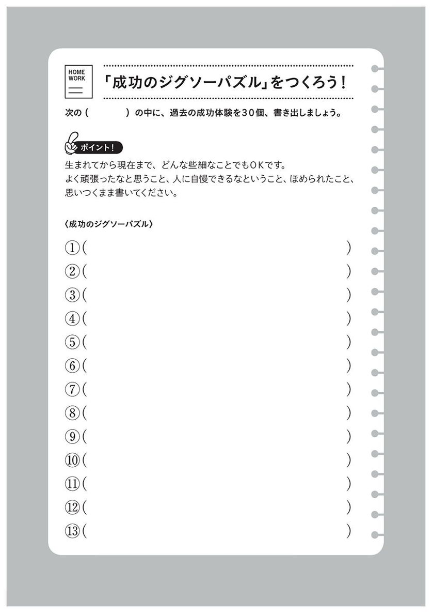
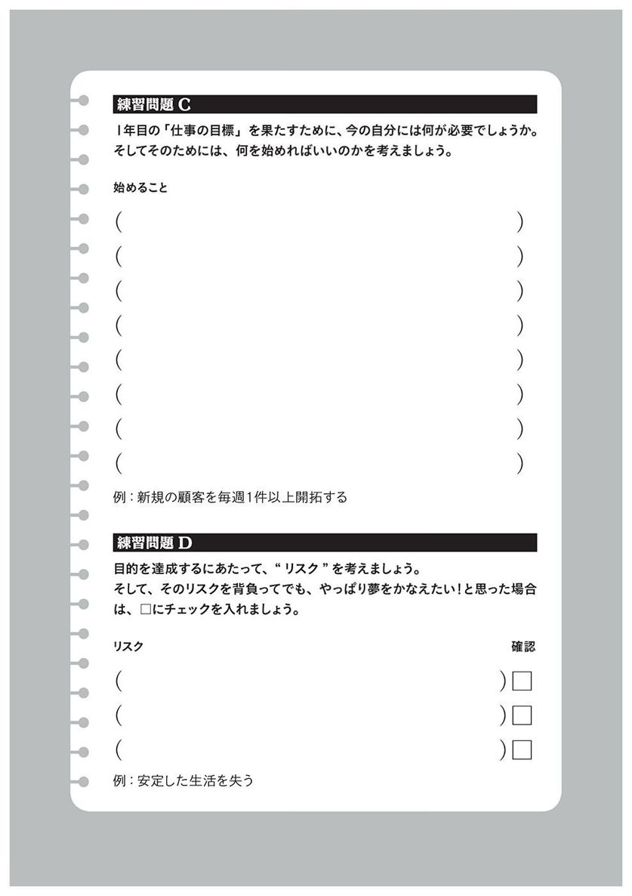

| 1日5分で「できる人」になれる！ 出世ドリル | |
| 高嶋 ちほ子 | |
| (2017) | |

１日５分で「できる人」になれる！
出世ドリル
高嶋ちほ子
「一流の人はね、すれ違っただけで、お互いに一流だとわかるんだよ」
以前、財界のトップの方に取材したとき、こんなことを言われたことがあります。
どうしてわかるのでしょうか。疑問を持つ私に、その方は笑いながらこう言いました。
「一流の人たちには、その人たちだけで通じる〝テレパシー〟のようなものがあって、互いに信号を送り合っているんだよ」
......オーラみたいなものでしょうか？ 目を丸くする私にその方は、「君も一流の人たちとつき合ってみれば、わかるようになるよ」とだけ、おっしゃいました。
イルカが超音波で会話するように、犬笛が犬にしか聞こえないように、一流の人たちが凡人には感じ取れないテレパシーで通じ合っているとしたら......。
そのテレパシーの正体とは、いったい何でしょう。そして、それはどうやったら身につけられるものなのでしょうか。
私が編集・取材・執筆を担当した「プロ論。」シリーズは、単行本、文庫合わせて累計40万部のベストセラーとなりました。リクルート刊行の転職情報誌『Ｂ‐ｉｎｇ』誌上で、約10年間にわたり連載していたトップインタビューをまとめたものです。
その企画の原動力となったのは、実はコンプレックスでした。就職活動がうまくいかず、フリーターからやっとつかんだ仕事が、小さな出版社でのヘアヌード写真集の編集。その後、いくつかの編集部でがむしゃらに働くも、思ったように道は開けず、大手マスコミで活躍する友人と何が違っているのだろうかと、いつも疑問に感じていました。
その疑問をぶつけたのが「プロ論。」です。
２０１３年現在でも、「リクナビＮＥＸＴ」という転職の情報サイトで連載が続いており、取材した数は、13年間で総勢５００人以上に上ります。
その連載以外にも、『東京ウォーカー』など多くの雑誌で経営者やオリンピックの金メダリスト、クリエイターや芸能人、作家などの取材を行いました。すべて合わせると、約20年間で１０００人以上の業界トップに、仕事に関する取材をしている計算になります。
「雲の上の人だと思っていたけど、彼らも同じ人間なんだ......」
テレビではなかなか見られない素顔を見るにつれ、著名人に対して最初はそんな印象を持っていたように思います。しかし、年月が経ち、さらに様々な業界トップの方の話を聞くうちに、ある疑問が湧いてきました。
彼らも私も同じ人間。そして私は彼らと同じように一生懸命働いている。でも、会社や世間からの「認められ方」が全然違う。
「どうして自分は一流になれないのか。何が間違っているのか」
その視点で彼らを観察するようになると、私のように認められない人と、成功者である彼らの間には明らかに〝違う点〟があることに気がつきました。
取材があるたびにその違いをメモしていったのですが、そこには同じ言葉が何度も書かれていたのです。
そう、「一流」の人には、共通点があったのです。普通の人にはない、彼らの共通点。しかもそれは特殊能力ではありません。誰にでもできる簡単なこと。
多くの人は、こんな大切なことを知らずに、いつか報われるであろうと、汗水流して働いている。頑張っているのに、成果が出ない、認められないとぼやいている......。
前出の経営者の方は、この共通点をテレパシーと呼んでいたのでしょう。「トップの流儀」と言ってもいいかもしれません。それを知ってはじめて、成功者への道を歩めるのです。逆に言うと、それを知らないで働いていても、いつまで経っても上には上れません。
周りを見回してください。
実力以上に、なぜかいいポジションにいる人って、いませんか？
すごい人たちから、なぜか好かれている人。
ピンチになると、なぜか神風が吹く人。
キツイ職場でもひとりだけ楽しそうに働いて、どんどんチャンスをものにしていく人。
つまり、「あの人って、何だかツイてるよね」と周りから言われてしまう人です。
そういう人は、トップの流儀を知っているのです。
なりふり構わず仕事をしている割には、いっこうにうだつの上がらないフリーの編集者だった私が、トップの流儀を意識するようになってから、一気に世界が変わりました。年収も上がっていきましたし、大使館のレセプションなど、一流と言われる人が集まるパーティに呼ばれるようにもなりました。そして雑誌や新聞のインタビューやテレビ出演、小説の審査員、本の執筆依頼など面白い仕事も舞い込むようになったのです。
本書は、そのトップの流儀を１冊のドリルにしたものです。
問題を解いていくと、自然と一流の人の考え方や働き方が身につきます。
全部で14日分ですから、一日１テーマを解いていくと２週間で終了します。
もし、問題を見てもいい答えが見つからなかった場合は、無理に埋めずに空欄のまま、解説を読んでください。そして、問題の意図を理解してから、再び戻って埋めるようにしてください。それでも埋まらなかったら、空けたままでもＯＫです。
何事も無理をしない。つまずいてもすぐ起き上がる。最後までやり遂げる。それが一流への第一歩ですから。
さあ、一緒に成長の階段を上っていきましょう。
そして今度は、一流のステージで再会しましょう。
高嶋ちほ子
装丁 bookwall
カバーイラスト 浦野周平（Shu-Thang Grafix）
 全部当てはまったら、出世道の免許皆伝！
全部当てはまったら、出世道の免許皆伝！
さて、何問できましたか？ 全部できたなら、あなたは出世のスペシャリスト、出世道の免許皆伝ですから、この本を読む必要はありません。
これは、私がキャリアカウンセリングの際に使っている「出世チェックシート」です。
穴埋めしたら、自分が当てはまっているかチェックしてみてください。毎日確認するだけでも、驚くほど効果が出ます。
それぞれの答えには解説をつけておきました。理由とともに頭に入れると、記憶に残りやすいものです。ぜひ、解説を読んでみてください。
 三度の飯より自分が好き
三度の飯より自分が好き
正解は「自分」ですが、「仕事」でも間違いではありません。確かに、一流になる人は仕事が好きです。でも、それ以上に自分をとても大事にしています。「自分を大切に思う心」が、いい仕事をする原動力だと言ってもいいでしょう。
利己主義に聞こえそうですが、そうではありません。一流の人は、他人もとても大切にしています。なぜなら、人間は共同体の中でしか生きられないことを知っているからです。
三流は、自分も他人も粗末に扱う
二流は、自分だけを大切にする
一流は、自分も他人も大切にする
これをよく覚えておいてください。この本の原理原則です。
ではなぜ、自分を大切にしないと、いい仕事ができないのでしょうか。
よく「成功するためには、〝根拠のない自信〟を持て」と言います。しかし、根拠のない自信は、自分が大好きでなければ持つことはできません。逆に言うと、自分のことが大、大、大好きになれば、いつでも自信満々でいられるのです。
自信は決断力を高め、平常心を促します。周囲に安心感を与えますから、チャンスも呼び込みます。実力以上の仕事を与えられても、成果を出していける。そういう人はどんどん出世していきます。
著名人の取材をしていて一番驚いたことは、世の中にはこんなに自分が好きな人たちがいるんだ、ということです。
とにかく一流の仕事をする人は、びっくりするほど〝自分〟が好きです。自分の仕事はもちろんのこと、家族、親戚、出身校、部下など、自分が関わっているものはすべて大切にします。なぜならば、「自分が好き」ということは、「今の自分をそのまま受け入れている」ということだからです。
「父親が苦手」「母親が嫌い」「出身校が恥ずかしい」「義母がむかつく」......凡人は、自分に関わることにいつも不満を持っています。ここが、一流になれる人と大きく違っているのです。
一流の人は、成功体験だけでなく、失敗、挫折、辛い体験、情けない過去など、どんなことでも受け入れ、すべてをいとおしく思っています。〝自分の人生、まるごと好き〟といった感じでしょうか。「酸いも甘いも......」という言葉の通り、辛かったこともうれしかったことも、すべてまるごと飲み込んでいるのです。
一流の人と話していると、とてもすがすがしい気持ちになるのですが、それは、自分を飾らず、素の自分をすべてさらけ出しているからでしょう。
いいところだけでなく、ダメな自分もさらけ出す。なかなかできることではありません。でも、だからこそ、一流の人の言葉は多くの人の心を動かすのだと思います。
それにしても、なぜそんなことができるのでしょうか。それは、一流の人は「ダメな部分も含めて自分を認めている」からなのです。
空振りもいっぱいあったけど、それでもよく頑張った、と、自分で自分をほめてあげられる。「自分自身が、自分の最大の理解者」なんです。彼らが少々批判されても、へこまない理由は、そこにあります。
そんな人が、生きていて楽しくないはずがありません。だから、一流の人はみんな、いい顔をしているのです。
「自分が好き」と言うと、自信過剰と思われるかもしれません。でも、そのくらいでちょうどいい。自分を愛する心が、向上心につながっていくからです。いろいろな人にもっと自分を知ってほしいと思うからこそ、自分を磨こうと努力するのです。
 デートも仕事もワクワクする
デートも仕事もワクワクする
お恥ずかしながら私は20代後半のころ、「サザエさん症候群」でした。日曜日の夜にサザエさんの陽気な歌を聞くと、「明日から会社だ......」と気分が憂鬱になるというアレです。
「仕事ができる人は、仕事を楽しむ」とは、かのドラッカーの言葉です。サザエさん症候群にかかっている人が出世するはずはありません。
出世するのは、休日でも仕事のことを考えるとワクワクする人、遊んでいても仕事のヒントを思わず探してしまう人、です。
マージャンがやめられずに思わず徹夜してしまうように、デートのことを考えるとワクワクするように、仕事が楽しくて楽しくてしょうがない、という人だけが一流になれるのです。
一時期、「朝４時起きで仕事しなさい」というような早起きを推奨するビジネス本が流行りました。確かに私の周りにも４時とか５時に起きて仕事しているという人、結構います。
彼らは何でそんなことができるのでしょうか。強靭な意志の持ち主なのでしょうか。いいえ、違います。仕事が好きで好きで仕方がないから、早起きしても全く苦じゃないのです。
ゴルフが好きな人は前日どんなに遅くとも、夜明けとともに起き出して意気揚々とゴルフ場に向かいますが、もしゴルフが好きじゃなかったら、苦行でしかありません。
同じように、仕事が好きじゃない人が４時に起きようとしても続きません。嫌なこと、辛いことは長続きしないんです。健康を害しますから。嫌なことは体が受けつけないようにできているんです。
ですから、出世したかったら、早起きして仕事の量を増やす前に、まずは、〝仕事そのものを好きになる〟工夫をしなくてはならないのです。この順番を間違えてはいけません。
仕事は工夫次第でどんどん楽しいものに変わっていきます。
仕事がデートと同じようにワクワクするものに変わったら、１カ月で１００時間仕事しても、苦痛じゃない生活が送れます。仕事を好きになる具体的な方法は、８日目に書いていますから、ぜひ実践してみてください。
 ほめられたら図に乗る
ほめられたら図に乗る
謙遜というのは、日本の素晴らしい文化です。日本では他人からほめられると、「いえいえ、私なんぞは......」と否定するのが美徳とされています。
しかし、あえて言いましょう。出世したければ、ほめ言葉を鵜呑みにしてください。遠慮はいりません。ほめられたら、どんどん図に乗って、「私ってすごいんだなあ」と自分に惚れ惚れすることです。
かの大ベストセラー『鈍感力』をお書きになった人気作家の渡辺淳一氏に取材させていただいたとき、非常に印象に残ったエピソードがあります。
渡辺氏が医者の道を捨てて単身上京されたときのこと、直木賞を取るまでの１年間は、作家としてやっていけるのかとても不安だったのだそうです。たまらず、バーのママに胸の内を打ち明けると、そのママは決まって「大丈夫よ。あなたには才能があるんだから」と言ってくれたとか。ママは本当は渡辺氏の作品を読んでもいなかったそうで、渡辺氏もそのことに気づいてはいたものの、「ママがそう言っているんだから、大丈夫！」と自分を励まし続けた、と言うのです。まさに鈍感力です。
当時、渡辺氏の周りには才能あふれる新人作家がたくさんいて、なかには「コイツにはかなわない」と唸るような才能を持った人もいたのだとか。しかし、そういう人に限って不安に押しつぶされ、作家として日の目を見ることがなかったのだと言います。才能のある人が何人も沈んでいくなか、渡辺氏が世に出ることができたのは、鈍感力、つまり〝図に乗る力〟だったということです。
「実るほど頭を垂れる稲穂かな」と言いますが、重くないうちから頭を垂れていては、落ち込む一方です。もちろん成功したら謙虚に自分自身を見つめることが大切ですが、それまでは、図に乗ったほうがいい。踊らされるくらいで、ちょうどいいのです。
 失敗したら、まず笑う
失敗したら、まず笑う
出世するうえで何より大切なことは、「何があっても落ち込まないこと」です。
発明王エジソンは、電球を発明するまで１万回失敗したと言います。記者がエジソンに、「１万回も失敗したなんて、ずいぶん苦労しましたね」と言うと、「失敗したのではない。うまくいかない方法を１万通り発明しただけだ」と答えたとか。素晴らしい開き直りです。しかし、このポジティブ志向がエジソンを成功させたのです。
北京オリンピックで女子ソフトボールチームを金メダルへと導いたメンタルトレーナーの西田文郎氏は、「成功する人は反省しない人」だといつもおっしゃいます。
自分が情熱を注いでやったことが失敗に終われば、誰だってガッカリします。でも一流の人は、失敗しても落ち込まず、原因を〝冷静に〟分析し、すぐに別の方法を試します。それは、失敗が貴重な財産だと知っているからです。
「成功は99パーセントの失敗に支えられた１パーセントだ」
これは、ホンダの創業者である本田宗一郎氏の言葉です。本田氏に限らず、多くの経営者の方が、「成功から学ぶことは何もないが、失敗から学ぶことは多い」とおっしゃっています。
失敗から学ぶためには、客観的な分析が必要です。そのためには、なるべく早い時期に落ち込みから立ち直り、冷静になることが大切なのです。
その際、一流の人は何をするか。笑うのです。笑うと気持ちが落ち着きます。１人で笑えなかったら、誰かに話して一緒に笑ってもらうといい。そうしたら「もう一回やってみよう」という気概が生まれます。
失敗してもワクワクする。この習慣が身につくと、人は加速度的に成長していくのです。
 コンプレックスを武器にする
コンプレックスを武器にする
ある人気作家の方にコンプレックスをお聞きしたら、「学歴だ」とお答えになりました。
その方は高卒なのですが、人間の機微を最大限に引き出す崇高な文章と、骨太で破天荒な生き方が魅力的な人物でしたので、とてもそんなことを考えていたとは思えず、非常に驚きました。続けて、その方はこうおっしゃいました。
「だからこそバカにされないように、文献や資料を徹底的に読み込むんだ」と。
誰にでもコンプレックスはあります。現在、成功している人も、もちろん持っています。
でも、成功する人たちは、それすらも武器にしてしまうのです。
コンプレックスを突かれるのは非常に痛いことです。普通では考えられないような、とんでもないことをしでかしてしまいます。ダイエット食品や育毛剤に莫大なお金を使ってしまうのも、真面目で慎重な人がうっかり結婚詐欺にだまされてしまうのも、コンプレックスを巧みにくすぐられるからです。
仕事でも、コンプレックスが邪魔をして力を発揮できなかったり、大事な場面でミスをしてしまったりするものです。そんなことが続くと、「どうせ何をやってもダメだから」と前進する気概を失ってしまいます。また、コンプレックスが強いと、周囲の言動を悪くとらえがちになり、自分を客観視することも難しくなってきます。
できれば誰にも話さず、こっそりとコンプレックスとなる原因を排除してしまいたいもの。しかし、簡単に排除できないからこそ、コンプレックスという強い感情が芽生えるわけで、放っておいたら自然に治ってしまった、という話は、ほとんど聞いたことがありません。
では、どうつき合えばいいのか。それは、コンプレックスを仕事に生かすことなんです。
コンプレックスが人の役に立つと、「コンプレックスは自分の大切な個性だ」と思えるようになります。あってよかったなと思えるようになります。コンプレックスが仕事に役立てば、その人の強みとなり、大変なパワーに変わるのです。
意見と仕事に名前を入れる
「名前を入れる」というのは、「自分にしかできないもの」にする、ということです。
一流の人は、自分がない人が嫌いです。人から借りてきたような顔の見えない意見や、誰がやっても同じような仕事をすることを、とても嫌います。
Ｇｏｏｇｌｅの共同創業者でＣＥＯのラリー・ペイジ氏がミシガン大学の卒業式で語った言葉に、こんなものがあります。
「そんなバカなことはできない、と誰もが思うことなら、そこに競争相手はいない」
途方もない夢でも、競争相手がいなかったらかないやすい。逆に言うと、他人と同じことをしていては、成功できないということです。これは、どの分野でも同じです。
一流になるために非常に重要なことは、〝自分にしかできない仕事〟をすることです。あなたでなくてはならない理由を、いつも探していなくてはならないのです。
大量の顧客情報を握っているとか、独自のマーケティング手法がある、など、その人しかできないものを持っている人は、会社やクライアントから重用されます。逆に、誰にでもできる仕事しかしていない人は、出世どころか、真っ先にリストラ要員になります。これは会社員だけでなく、フリーで活躍する人にも言えることです。その人しかできないスキルがある人は仕事にあぶれません。ギャランティも高く要求できます。
では、自分にしかできない仕事をするには、どうしたらいいでしょうか。
そのためには自分の持ち味を伸ばし続けることです。持ち味は長所だけに限りません。「短所も個性だ」と開き直るくらいで、ちょうどいい。
前項で、コンプレックスが仕事に役立つと〝強み〟に変わると言いましたが、短所も大切な個性です。「落ち着きがない」と「好奇心旺盛」が紙一重なように、短所はひっくり返せばその人の持ち味に変わります。成功する人は、そうやって自分にしかできない仕事を自分でつくっていくのです。
そして、もう一つ大事なことは、「自分で決める」ということです。人に流されず、自分の頭で考える。みんなが「そうだ」と言っていること、つまり常識や伝統、世評に疑問を持つことです。
「なぜ、それがいいと思われるのか」「本当に必要なのか」「なぜ、誰もやらないのか」。どんなことでも一度、自分のフィルターを通して考えてみる。すると、物事の本質や自分のやるべきことが見えてきます。そこに自分の強みを加えると、「自分にしかできない仕事」になるのです。
会った人を、必ず感動させる
学生のころ、ある有名司会者の講演イベントを手伝ったことがあります。
たくさんの訪問客にせわしくお茶を出していたところ、パンフレットを熱心に見ていたある男性が私のほうにやってきて、目を覗き込むようにして「どうも、ありがとう」と丁寧にお礼を言ってくださいました。
その男性は、『オレたちひょうきん族』などを手掛けた元フジテレビの名プロデューサー横澤彪氏でした。単にお茶を出すだけの学生のためにわざわざ腰を上げ、目と目を合わせてお礼を言うなんて、なかなかできることではありません。やはり数々の伝説的な番組を成功させた裏には、会う人を虜にする人心掌握術があるのでしょう。
横澤氏に限ったことではありませんが、一流の仕事をする方は、会う人をいつも感動させます。
日本一のドケチ社長（現・相談役）で有名な未来工業・創業者の山田昭男氏もそうです。
未来工業は、残業禁止、ホウレンソウ禁止、ノルマ禁止、他社と同じ製品禁止という変わった経営方針で有名ですが、会社に取材に行くと、入り口に大きなボードが置いてあり、そこには「○○○○編集部 高嶋様 ２階応接室」と書かれてありました。まるで旅館の歓迎ボードのような感じです。これには同行したスタッフも感激していました。
未来工業は、何十年も増収増益を重ね、年間休日１４０日以上、社員の平均年収約６００万円という超優良企業です。常に人を喜ばすことを考えているからこそ、これだけの大不況にそんな業績が残せるのでしょう。
リクルート時代、仕事があって朝８時に出社したことがありました。しばらくすると「みなさん、おはようございます。早くからお疲れさまです」と、ものすごく大きな声がしたので、驚いて入り口を見ると、部門長が深々と頭を下げていました。40代で主力部門の部門長になった人です。いつもは明るい彼が、自分より先に来ている若い人たちに向かって、真摯に頭を下げている......。圧倒されました。彼は毎日そうやって自分より早く来ている部下にあいさつをしているのでしょう。「この人ならついて行っても大丈夫」。私もそう感じましたし、あのときフロアにいた人で、そう感じなかった人はいないと思います。
「情けは人のためならず」と言いますが、仕事がたくさん来る人、出世が早い人はたいてい、いつも人を喜ばせることを考えています。そのなかでも一流に上り詰める人は、その喜ばせ方が半端じゃないので、皆〝感動〟するのです。
食事に行ってワリカンしない
「食事に行ってワリカンしてはダメよ」
これは、ニューヨーク在住のセレブから言われたことです。
ニューヨークに赴任している日本人サラリーマン３人と私とセレブの計５人で、五番街で会食をしていたとき、もともと用事が入っていた１人が自分の分の代金を置いて帰ろうとしたら、「レストランでワリカンはダメ」とセレブがやさしいながらも毅然と言われたのです。
結局、そのセレブが５人分の代金を支払ってくださったのですが、驚いたのはその支払い方法。レストランに入ったとき、すでにレジにカードを渡して手続きを済ましてあり、最後にさらっとサインだけして終了、という非常にスマートなものでした。
もともとそのセレブが私を歓迎するために知人の日本人を呼んでくださったのですが、人をレストランに招待するというのは支払いも全部自分で持つということなんだと、もてなしの基本を教えていただいた一件でした。一流の人たちは、そうやって関係を築いているのです。
よくよく考えてみると、社会人になって20年以上経ちますが、出世している人は飲みに行ったとき、ワリカンせずに、「僕が払いますから」とお金を出そうとしてくれたように思います。20代でも年下でもそうです。
先日、この仮説を立証すべく、ある上場会社の役員になった方に、「若いころはワリカンしていましたか？」と聞いてみると、「20代のときから、したことない」ときっぱり言われました。その方はやはり、自分の部下にも「人を誘ったらワリカンするな」と話しているそうです。
なぜ、一流の人はワリカンにしないのか。ずっと考えていたのですが、結局、きてくださった方への感謝と、人を喜ばせたいという気持ちからきているのだと思います。行きつく先は、やっぱり〝感動〟です。「人を喜ばすいい機会なのに逃すなんてもったいない。ぜひ自分に払わせてほしい」。一流の人は、そう考えるのです。
立つとき、イスを戻す
「出世したければ、席を立つときに、イスを戻しなさい」
本のソムリエこと「読書のすすめ」店長の清水克衛氏に教えてもらったことです。
それ以来、著名人インタビューがあるたびにチェックしているのですが、一流と呼ばれる人のほとんどが、自分のイスをきちんと戻されます。
新幹線のリクライニングシートでも同じです。「この人、偉い人だろうな」と思う人ほど、降りる際にシートのリクライニングを直して、自分のごみをすべて持って、その場を去っていかれます。ホテルでもチェックアウト後のベッドの状態で、その人が一流かどうかわかると言います。
自分に優れたスキルがあることは、一流の絶対条件だと思いますが、それだけではなく他人への気遣いができるかどうか、他人の立場になって考えられるかどうかが、一流になれる境界線ということでしょう。
「顧客の〝ため〟ではなく、〝立場〟でものを考えよ」とは、セブン＆アイ・ホールディングスの鈴木敏文会長の本に書かれていた言葉ですが、常に「他人の〝立場〟でものを考える」訓練をすることは、仕事をするうえでもとても役に立ちます。「ため」で考えることはできても、「立場」で考えることはなかなかできないことですから。
どんな仕事でも、お客さんがいなければ成り立ちません。その人たちの「ため」に働くことは楽しいことです。しかし、その人たちの「立場」になって働くのは難しいし、とても大変なこと。だとしても、「立場」になって働くのが本当のプロなのです。
世阿弥の言葉に「離見の見」というものがあります。客席で見ている観客の目になって、いつも自分を見なければならない、ということです。
観客のため、と考えていると、いつの間にか独りよがりになって、全く観客が望んでいないものを提供していることにもなりかねません。それではお客さんは満足しません。人気はどんどん落ち、仕事は減っていきます。
自分の仕事に客観性を持つこと。そして、それが顧客の益になっているかを常に確認すること。これは、どんな仕事であっても非常に重要なことなのです。
仕事のゴールが金じゃない
「後ろ髪ひかれる思いで会社を辞めるなら、きっと成功する」
これはキャスターの小谷真生子氏の言葉です。
彼女はキャスターになる前、ＪＡＬのキャビンアテンダントをしていたそうです。しかし、記者になる夢をあきらめきれなかった小谷氏は、休日には東京に出向き、記者の試験をせっせと受け続けたそうです。そうしてやっとつかんだＮＨＫのキャスターの仕事ですが、収入が４分の１になってしまうことで、ＪＡＬを辞めるときにはとても悩んだと言います。
最後は、やりたいことを優先して退職されたのですが、そんな小谷さんが言った言葉が、「後ろ髪ひかれる思いで会社を辞めるなら、きっと成功する」でした。
方向転換すると、ほとんどの場合、収入が減ってしまいます。転職してすぐ給与アップするのは、同業界への転職など、即戦力である場合がほとんどです。逆に言うと、給与が下がっても構わないと思える覚悟がなければ、方向転換してもうまくいかないということです。そして、その覚悟は、多くの場合、「自分はこれを成し遂げなければならない」使命感から生まれます。地位とか名誉といった自分のためだけでは、大きなことは成し得ないのです。
人生を好転させたければ、お金以外の夢を持つこと。大きな成功をつかむ人は、必ず使命を持っているのです。
さあ、１日目が終了です。今日お話ししたことは、出世のための大原則です。
２日目からは、この10項目が身につくように、さまざまなワークショップを用意しています。ぜひ、実践してみてください。

出世したかったら、自分を好きになりなさい
さて、練習問題Ｂを解いて、いくつ当てはまったでしょうか。
15個全部当てはまった人は、「自分がとても好き」な人ですから、この項目は飛ばしていただいても大丈夫です。３日目に進んでください。
15個全部とはいかなくとも、10個以上当てはまることが理想です。
もし、ほとんど当てはまらなかったとしても、心配いりません。このドリルを進めていくうちに、自然に自分のことが好きになっていきますから。
著名人の取材を続けてきて一番衝撃的だったのが、「この世には、こんなに自分が好きな人たちがいるんだ」ということでした。
私自身、自分のことを〝嫌い〟とまでは思っていませんでしたが、そんな比じゃありません。「三度の飯より自分が好き」のレベルなのです。
成功談を話すのが好きなのは、誰だってそうです。どんな人でも自分が成功したことはみんなに話したいと思うものです。しかし、一流であればあるほど、挫折で苦しんだ過去、コンプレックスなども、こちらが求めれば熱心に、そして真摯に話してくださいます。
また、彼らは自分の写真を撮られるのも大好きです。当時、容姿に自信がなく、写真を撮られるのが嫌いだった私は、取材のときにうれしそうに写真を撮られている著名人の方々を見て、とても不思議に思っていました。もちろん取材するのは、ハンサムな俳優ばかりではありません。失礼ながら、お世辞にも容姿端麗とは言いづらい方でも、なぜかウキウキして写真を撮られている。このことが私には驚きだったのです。
そんなとき、明石家さんまさんをテレビで目にして、「自分が出演しているドラマを見るのが大好きで、繰り返し家で見て楽しんでいる」と楽しそうに語っていたことを思い出しました。もしかしたら、そこに〝出世できる人とできない人の違い〟があるのではないか──。
そう言えば、取材した方々の多くは、自分が掲載された記事をいつでも見られるように、大事に保存していらっしゃいます。取材のときはその方の事務所に伺うことが多いのですが、本棚に過去の記事がファイルに入ってきれいに並べられ、いつでもすぐに取り出せる状態になっているのです。
一方、私はと言うと、自分が編集した記事だけでなく、自分が取材を受けた記事でさえも、一度見たら段ボールに入れ、そのまま放置していました。
整理するのがめんどうくさかったというのもありますが、ダメな自分の姿を見るのが恐ろしく、開く勇気がなかったのです。
そんなある日、リクルートエグゼクティブエージェントのカリスマコンサルタント・森本千賀子氏に取材させていただく機会がありました。彼女は取材の後、出版された本に加え、ご自身で自分の経歴や強みを分析された〝独自の職務経歴書〟をくださいました。
「これを渡すと、どれだけ自分が好きなんだ！ とみんなから言われちゃうんですけどね」と笑いながらおっしゃっていたのですが、その笑顔の中に底知れぬパワーを感じ、この人はもしかしたら有名になるかもしれないと思ったものです。実際、彼女はその数年後、ＮＨＫ『プロフェッショナルの流儀』に出演されるなど、活躍の場を広げています。
森本さんに感じたそのパワーは、これまで取材してきた一流の人たちと同じものでした。彼女と私の違いは何だろう。同じリクルートで働いているのに、何が違っているのだろう......。答えは、森本さんの言葉の中にありました。
一流になる人は、「自分がとても好き」なんです。もっと言うと、過去の自分もひっくるめて全部好き、なんです。
誰だって挫折や失敗はあります。消去したくなるような恥ずかしい過去もたくさんあります。でも、そんな自分も全部含めて、自分が好き。だから著名人の方たちは、自分の作品を楽しく何度でも見ることができるのです。
やはり自分が好きな人は出世する。私がいつまで経ってもうだつが上がらないのは、過去の自分を飲み込めないからだ──。
出世の第一歩は、ダメな自分を許すこと
自分が好きな人は出世する。逆に言うと、自分が好きになれないかぎりは、努力しても出世できない。そう確信した私は、自分のことがさほど好きではない理由を分析してみました。答えは簡単。自分をそのまま受け入れていなかったんです。
「自分をそのまま受け入れる」ということは、過去の自分を認めてあげるということです。ダメだった自分を許してあげるということです。
自分で言うのも何ですが、もともとひどい怠け者にもかかわらず、仕事にはかなり熱心に取り組んでいたつもりです。残業はとても多かったと思いますし、休日が全くない編集部もありました。でも、どれだけやっても〝理想の自分〟には程遠かった。
就職活動に失敗し、小さな出版社でヘアヌード写真集や成人向け男性誌の編集からスタートした私は、キャリアに関してコンプレックスを持っていました。大手マスコミに入って活躍している友人と自分を比べ、「自分はカッコ悪いなあ、恥ずかしいなあ」と、ずっと自分にダメ出しばかりしていたのです。
私は、思い切って押し入れの奥に放置していた段ボールを開けてみることにしました。
......パンドラの箱よろしく、そこからはやはり、見たくない仕事がたくさん出てきました。でも、思ったほど嫌じゃない。以前はまともに見られなかったのですが、十数年経って意外と楽しく見られるようになっていたのです。
どうしてだろう。不思議に思いつつ段ボールをあさっていたら、ある色紙に目が留まりました。10年間在籍した転職情報誌『Ｂ‐ｉｎｇ』を離れるとき、編集部の人たちがくれた色紙です。そこには、「雑誌の〝看板〟をつくってくれてありがとう。『プロ論。』は、あなたにしかできない仕事だと、本当にそう思っています」と書かれていました。
もう、自分を許してあげよう。そのとき、つくづく思いました。「ダメな自分がいたからこそ、残せた仕事があったのだから」と。
働く意味を知りたかったら、人に感謝するといい
「どんなにひどく寂しい状況だったとしても、出会いに目を見開いておけ。次の人生を決めるような出会いは必ずある」と教えてくださったのは、映画監督の堤幸彦氏でした。
監督のおっしゃる通り、ヘアヌード写真集や成人向け男性誌の制作であっても、運命を変えるような素晴らしい出会いはたくさんありました。写真家の荒木経惟氏など、超一流の方々とお仕事をさせていただいたことはとても貴重な経験でしたし、将来役に立つようにと、いろんなパーティーや地方ロケにも同席させてもらいました。メジャーな雑誌に移ってからも、取材先探しなど困ったときに助けてくださったのは、そのとき一緒に働いていた編集部の人たちでした。
私はそんな恩も忘れ、過去を封印しようとしていたのです。人に感謝できない人が出世するはずはありません。なぜなら人は、感謝することで、働く意味を知るからです。
周囲の人に感謝すると、自分は生かされていると感じるようになります。それが高じて、自らの〝使命〟に気づくのです。
そんな大切なことがわかったのも、ダメな自分がいたからです。やはり苦しい過去は貴重だということです。
誰も認めてくれなければ、自分自身でほめればいい
「不器用ですから」
これは高倉健さんの口ぐせですが、健さんだけでなく、多くの成功者が自分のことを不器用だと言っています。そして、「器用な人よりも、不器用な人のほうが一流になる」とも。
それは、早いうちからたくさんの壁を乗り越えていた方が、後々大きな壁にぶつかってもよじ登っていく力があるから、という理由です。最初から順風満帆で行ってしまったら、大成せずに終わる。胆力がないのに、いきなり大きな壁にぶつかるからです。
最初からできる人よりも、なかなか思う通りの人生を歩めなかった人のほうが、努力する方法と楽しさを知っている。その力こそが偉大だということです。
そう考えると、ダメだった自分を許せるような気がします。
だって、「成果が出なくて苦しんだこと」「回り道ばっかりしてきたこと」が、ほかの人にはない、ものすごい財産なのですから。
「自分はダメだなあ......」。つい、そんな風に言ってしまいそうになったら、「いや、自分は高倉健だ、一流になる」と思えばいいんです。だってその通りなんですから。
これまでの自分を認めてあげる。自分自身が、自分の最大の理解者になる。
一流への道は、まずそれがスタートなのです。

「ほめ上手」は金のわらじを履いてでも探せ
さて、練習問題Ｂには、いくつチェックがついたでしょうか。お察しの通り、多ければ多いほど、自信がないという判定になります。
15問中、７個以上チェックがついてしまったら要注意です。「自信」が足りません。残念ながらそのままでは、一流にはなれません。
出世の基本は、「何があっても、絶対に落ち込まないこと」だからです。
ではまず、自信とは何かを考えていきましょう。
自信は２つの要素から成り立っています。
ひとつは「自分は世の中に必要な存在だ」と思う「自己肯定感」、もうひとつは「何かを達成できる」と思う「自己効力感」です。
自己肯定感が少ないと、自己効力感も減ってしまいます。逆に言うと、自分は必要な存在だと思えるから、「きっとできる」という自信が湧いてくるのです。
小さいころに親からたくさんほめられて育った人は、自己肯定感が高く、自分を好きになりやすい傾向にあると言われています。子どもはほめて育てるといい、と言われているのはそのためです。
しかし、ほめられて育ったとしても、自己肯定感が低くなってしまう場合があります。例えば、大学受験や就職活動がうまくいかず、そのときの挫折感から抜けられないでいる。職場の人間関係がよくなくて疎外感がある、などの状況です。
もし今、あなたがそうであっても大丈夫です。自分で自己肯定感を上げる工夫をすればいいのですから。そのための一番簡単な方法は、「ほめてくれる人」を探すことです。
よく、自分を導いてくれる心の師を〝メンター〟と言いますが、私はそういう人たちを〝ホメター〟と呼び、心の中でいつも手を合わせています。
どうにも苦しいとき、辛いときに、「うんうん」と話を聞いてくれ、「大変だったねえ」と共感してくれ、「大丈夫、頑張っているんだから、きっといいことあるよ」と、根拠がなくても太鼓判を押してくれる人です。
「そんな都合のいい人、いるの？」と言われそうですが、意識して探してみると、結構います。
新人時代、面倒を見てくれた上司、辛い職場で一緒に頑張ってきた同僚、自分のことをかわいがってくれたバイト時代の上司、面倒見がよくてみんなから慕われていた高校の先輩や同級生、よく仕事をお願いしている外部スタッフなど、探せば意外といるものです。前出の渡辺淳一氏の例ではないですが、バーのママでも構いません。少々の出費はこの際目をつぶり、周りを「ほめ上手」で固めましょう。〝ほめ上手の人は、金のわらじを履いても探せ〟なのですから。
アンデルセンの童話に「裸の王様」という話がありますが、目指すはまさにあんな状態です。自信がないときには、おだてられてすっかりバカになる、くらいでちょうどいいのです。
経営者の方の自己啓発本を読むと、出世できない人の共通点として、「イエスマンばかり周りに置きたがる人」とよく書かれてありますが、それはある程度の結果を出して自信に満ちているときの場合です。無意識に「自分ってダメだなあ」なんて考えてしまうような状態なら、まずは〝裸の王様〟になって自己肯定感を高め、自信を持つことを第一に考えましょう。「ほめられたら図に乗る」の鉄則を忘れないようにしてください。
ホメターだけが知っている「驚くべき能力」
練習問題Ｆは、自己肯定感が下がっていたスランプの時期に、私が実際にやって、非常に効果的だったことです。
「私の長所は何ですか」と聞きづらかったら、「人材アセスメントの一環で長所を考えなくてはならないので」と前置きしてもいいかもしれません。自分では思ってもみなかった能力が次々と明らかになるので、自信がつくだけではなく、実際に自分発見ツールにもなります。
私の場合は６人のホメターさんにメールをして回答をもらったのですが、私のいいところとして「発想力がある」「責任感がある」「不幸を笑い飛ばしてくれる」「何でもないことから、深いことを導き出す力がある」「思い立ったらすぐやる行動力がある」「一緒に仕事をすると楽しい」などがあがりました。どうですか？ 銀座のクラブだって、こんなにはほめてくれません。まぶしいばかりのほめ言葉の連発に、ぐっとモチベーションが上がります。
私にさせたい仕事としては、「場が盛り上がるので、うちの会議に出てほしい」「発言力があるので、自分の企画のプレゼンを代わってほしい」などでした。これまたモチベーションが上がるうえに、自分の知らない能力の発見にもなりました。
私は小さいころ人見知りだったこともあり、人と接するのが苦手だと思っていたのですが、他人から見ると、ずいぶん明るい人と思われているようです。人の能力とは本当にわからないものです。
心理学の用語で「ジョハリの窓」（図）というものがあります。自分には「公開された自己（開放の窓）」「自分は気づいていないものの、他人からは見られている自己（盲点の窓）」「隠された自己（秘密の窓）」「誰からもまだ知られていない自己（未知の窓）」の４つの側面があるというものです。
練習問題Ｃで挙げたのは「開放の窓」と「秘密の窓」です。そして、ホメターの人たちは、「盲点の窓」を気づかせてくれたのです。つまり、自分の中には、自分では気づいていない長所がたくさんあるということです。
自分が気づいていない「いい部分」を知ると、自己肯定感がぐっとアップします。自分はもっといろいろなことができるんじゃないかと、自己効力感もアップします。つまり、自信がみなぎってくるのです。
「ほめられリスト」で〝自分のすごさ〟を確信する
世の中には、ほめ上手の人も手を焼く、「ほめられ下手」の人がいます。
ほめられると、自分をだまそうとお世辞を言っているのではないか、と疑ってかかるというわけです。非常にもったいない話です。あなたがよほどの権力者でないかぎり、他人はそうそうお世辞を言いません。だって、めんどうくさいですから。
仮にお世辞を言ったとしても、全くの嘘は言えないものです。全然思ってないわけではないのですから、素直に受け取っておいたほうが得です。出世したければ、ほめ言葉で３杯ご飯が食べられるくらいじゃないといけません。
人はほめられたことを忘れてしまいがちです。特に、自分で気づいていなかった「盲点の窓」に関しては、書き留めておかないとすぐに忘れてしまいます。言われたほめ言葉をいつでもメモできるように、手帳に「ほめられリスト」のスペースをつくっておくといいと思います。私は、ほめられたら、すかさずメモを取っています。盆と正月が一緒に来たくらいおめでたい人間ですが、困ったことはありません。手帳を落としたら恥ずかしいと心配する人がいますが、いいじゃないですか、ほかの人が見たって。誰かを傷つけるわけじゃなし。
私の知っているテレビのディレクターは、プライベートの日記をいつも会議テーブルの上に置いていて、よくＡＤ（アシスタント・ディレクター）が読んでは笑っていました。その人、今は出世して人気プロデューサーになっています。そのことを思い出すたびに、開き直るって大事なんだなあと思います。
とにかく「記憶ではなく、記録する」ことが大切です。同じほめ言葉を言われたら、言葉の横に「正しい」の文字を書くようにし、回数も記録しておきます。
人の〝記憶〟はあいまいです。しかし、人の〝記録〟ほど役に立つものはありません。客観的な事実ほど納得できるものはないからです。「ほんとかな......」と思っていた自分の長所も、可視化することによって、だんだん信用できるようになってきます。
世の中には、他人の幸せや成功を素直に喜べない人が必ずいます。
先日、知人の現役ＯＬが自分の職場を題材にしたエッセイでベストセラーを出したのですが、「お宅の社員がこんな本を出してますよ」と会社に匿名の投書がきたそうです。「なんで職場がわかったの？」と聞いたら、どうやら同僚の仕業じゃないかと。世の中には、とんでもない〝ねたみ爆弾〟を投げてくる人がいるものです。
やたらと他人を批判したり、説教をしたがる人。他人の幸せをねたんで足を引っ張る人。私はそういう人を密かに「サゲター」と呼び、別の意味で手を合わせ、取りつかれないように、いえ、関わらないようにしています。
そういう人の話は役に立たないばかりか、せっかく培った自信が失われていきます。出世したかったら、どんなにさびしくとも、きっぱり断る勇気を持つことが大切です。
最初は孤独を感じるかもしれませんが、仕事が楽しくなってくれば、同じ志を持った仲間が現れます。ドラクエのように一緒に成長できる仲間とパーティを組めばいいのです。

「成功のジグソーパズル」で最強の自信が手に入る
４日目のテーマも「自信」です。
「まだやるの？」と思われるかもしれませんが、出世力のベースとなるものは、自信です。一にも自信、二にも自信、三も四も自信です。
これがないと、いくら一生懸命やってもいい結果は出ません。チャンスも巡ってきません。自信体質になるまで、しつこくやり続けましょう。
さて、成功体験を30個あげられたでしょうか？
自分のこととはいえ、成功体験を30個あげるのはかなり大変な作業だと思います。
それだけ、人は自分のいいところを忘れてしまっているんです。自己肯定感が低いときはなおさらです。
しかし、実際に30個あげてみると、「意外と自分って頑張ってきたんだなあ」と、何だか晴れ晴れとした気持ちになるものです。マラソンランナーの有森裕子さんではありませんが、「自分で自分をほめてあげたい」気分になりませんか。
過去の成功体験を30個あげてみる。私はこれを「成功のジグソーパズル」と呼んで、スランプに陥った人に勧めています。即効性があるばかりか、自分が得意とすることや好きなこともイメージできますので、ぜひ、やってみてください。
そして書き終わったら、１分間、「成功のジグソーパズル」をじっと見つめてください。
ひとつひとつの成功体験は小さくとも、たくさん集めてみると〝すごい自分〟が浮かび上がってきます。
あなたのジグソーパズルは、どのような絵になったでしょうか。
そこに現れた顔は、結構いい顔をしていませんか？
キャリア理論に「スモールステップ法」というものがあります。
わざと目標達成を小刻みにすることで、小さな達成感を積み上げ、大きな成功に結び付けていくというやり方です。
この「成功のジグソーパズル」は、そのスモールステップ法を応用したものです。「自分ってダメだなあ」と思わずつぶやいてしまうようなときに、何度でもこの表を見てください。きっと、自信がふつふつと湧いてくると思います。
成功の小さなかけらが集まると、大きな自信になるのです。それは、根拠のない自信などではありません。もっともっと大切な、「自分で生み出した自信」なのです。
苦しいときには、自分の得意なことだけをやる
成功体験の裏には必ず、あなたの才能、得意なこと、好きなことが隠れています。前ページのリストで、それを明確にしてみましょう。
思うような結果が出ないときには、このリストを見直して、自分のできること、得意なことから手をつけるようにしましょう。間違っても苦手なこと、興味が湧かないことに手を出してはいけません。まずは自信を取り戻すことが先です。
転職先を決めるときや独立して新しい仕事を始めるときなど、人生の岐路に立った場合にも、このリストは有効です。自分がどんなことでうれしいと感じるのか、つまり「モチベーションのツボ」が、ひと目でわかるからです。自分のことはなかなか客観的に見られないものです。普段から可視化しておくと、後々、役に立ちます。
うまく言葉にできないときは、３日目でホメターさんから返ってきた言葉を参考にすると、ぐっと書きやすくなります。
ここは、とても大切なところです。自分のキャリアの整理にもなりますので、めんどうくさがらずにやってみてください。そして、何があっても落ち込まない自信がついたら、次のステップに進んでください。
どんなときでもサービス全開にできるか
「アマチュアは一生懸命に燃焼すればいい。でも、プロはプレーすることで、見ている人に元気や勇気を感じてもらうもの」。テニスプレーヤーの杉山愛氏は、17歳でプロに転向したとき、すでにこんな持論を持っていたそうです。
杉山さんだけでなく、一流の人は、いつも周りの人を喜ばせることを考えています。取材でお会いすると、こちらが恐縮してしまうほどサービス精神が旺盛です。
ある有名コメディアンの方に取材させていただいたとき、始まる前にマネージャーさんが、「相手が満足するまで、２時間でも３時間でも一生懸命に話し続けますので、十分話が聞けたと思った時点で、『もう大丈夫です』と言ってもらえますか」とおっしゃられて、とても驚いたことがあります。あれほどの大スターが、私の取材にそれほど情熱を注いでくれるんだという感激とともに、マイナー雑誌の取材にも全力で取り組む姿勢に、改めてトップに立つ人のすごさを感じたものです。
一流の人に取材すると、間違いなく感動します。その気配りが半端じゃないからです。
一流の人は、取材者に満足してもらえるような話をするために、そのとき持っている一番のネタをぶち込んできます。
ある人気歌手の方が、苦しい時期を乗り越えた経験として、がんになって子宮を摘出された話をしてくださったときには、度肝を抜かれました。
ビジネス誌のインタビューでしたから、ほかのエピソードでもよかったわけです。しかし、その方は、仕事で悩んでいる読者を励ますために、最大限自分にできることをしようとして、その話をしたのです。同じ女性として大勢の前で子宮摘出の話をすることが、どれだけ大変なことかわかるだけに、トップの覚悟を教えてもらった気がしました。
人を喜ばせると、ストレスが消える
一流の人たちは、どうしてサービス精神が旺盛なのでしょうか。
いい仕事をするために現場を盛り上げようとしている。
どんな仕事も全力投球をして、次へつなげようとしている。
いろいろな理由が考えられると思います。実は私が密かに感じているのは、「人を喜ばせることで、自分もパワーをもらっている」ということです。
人間は、人の役に立つとうれしいと感じる生き物です。人を喜ばせると自己肯定感が高まります。これは自信につながり、仕事への意欲も自然と湧いてきます。
このことは、学術的にも証明されているようです。
セロトニン研究の第一人者の有田秀穂先生によると、最近では、「人に親切にすると、オキシトシンという脳内物質が出て、ストレスが消えてしまう」という研究結果があると言います。
まさに「情けは人のためならず」ということわざの通りです。
いい仕事をするために全力で向き合うことは確かに面白いことですが、同時にストレスもたまります。疲れを感じたら人を喜ばせてみる。人のためになることをして健康になるなんて、一石二鳥です。しかもタダ。試さない手はありません。
感謝する心がないと、成功しない
一流の人が人を喜ばせようとする大きな理由は、もうひとつあります。それは、「自分を支えてくれている人たちへの恩返しの気持ち」です。
サッカー選手の長友佑都氏は著書の中で、「感謝の心があるから成長できる」と書いています。実は、著名人の方で「成功に一番必要なのは、感謝する心だ」とおっしゃる人はとても多いのです。ＳＢＩモーゲージ取締役執行役員常務の横山信治氏が、「感謝の心には、困難を乗り越えさせるパワーがあるから成功に必要なんだ」とおっしゃっていて、なるほどなあと思いました。
確かに、私は『プロ論。』の連載を13年間続けていますが、その間、離婚したり、交通事故にあって入院したり、暴行事件に遭ったりと、いろいろと苦しい時期がありました。それでも続けてこられたのは、やはり、これまで協力してくださった方々に恩返しをしなければ申し訳ない、という気持ちがあったからだと思います。
私ができる恩返しというのは、次の世代に一流の人から教えてもらったことを伝えることです。そのために本業以外でも働き方セミナーなどをしていますが、自分のためだけだったら、辛くてとっくにやめていたでしょう。
成長を続けるためには、たくさんの階段を上っていかなくてはなりません。
しかも、その階段はどんどん高くなります。最初は自分一人の力で何とか上れても、そのうち、自分だけの力ではどうにもならなくなってきます。それを支えてくれるのは周りで応援してくれる人であり、また、その人たちへの感謝の心が高い壁を乗り越えさせるのです。
バルセロナオリンピック柔道金メダリストの古賀稔彦氏がインタビューでこんなことを語っていました。「一人で戦っていると思っているうちは、大した成果が出せなかった。応援してくれている人の存在を感じられるようになってから、結果を恐れず、自分が目指しているものに純粋に挑戦していこう、と思えるようになった」と。
この言葉は、味方がいると感じられることがいかに大事か、ということを教えてくれます。そしてその人たちに感謝することが、いい仕事をする原動力になるのだということも。
人を喜ばせる習慣がある人は、いい結果を出す
ファーストリテイリング代表取締役会長兼社長の柳井正氏は、著書の中で、「需要を新しく作り出すためには、顧客の立場に立って、『いったい何に不満を感じて』おられるかという潜在ニーズを、頭を振り絞って日夜考えることが大切だ」と述べています。
いくらいいものをつくっても、使う人がいなければ何の役にも立ちません。自分が満足するものをつくるのは単なる趣味で、他人が満足するものをつくるのがプロです。わかっていても、相手が望むことを察するのは、非常に難しいことでもあります。
その力を身につけるために有効なのが、「人を喜ばせる習慣」なんです。できる人はこのことに早くから気づいていて、すきあらば人を喜ばせて、人の心を動かすツボを探っているのです。
以前、あるプロ野球の監督さんにインタビューしたとき、こんなことがありました。
「（掲載前に）原稿の確認はされますか」とその監督さんに聞いたところ、「しなくていいよ、君たち、プロだから」と。
その言葉にすっかり舞い上がってしまった私は、会社に戻るなり、「いいインタビューが取れたから、ページを増やしてください」と編集長に直談判したのです。
さすが、チームを何回も優勝に導いている監督さんだけあります。私が「プロ」という言葉に弱いことをちゃんと見抜いて、おだててくれたのです。結果、その監督さんのインタビューは大幅増ページで掲載されました。
「士は己を知る者のために死す」とは、司馬遷の書いた『史記』のなかに出てくる言葉です。士（サムライ）は、自分を信用してくれたり、志や心意気をわかってくれた人のために命さえも投げ出します。「相手が何を言われたらうれしいか」を常に探り、喜びのツボを押してあげることができる人は、多くの人がついてきます。
人を喜ばせるのが上手な人は、想像以上の結果を残す。これは、非常に理にかなったことなのです。

やっぱり、ひがみ根性は嫌われる
コンプレックスとは非常にやっかいなものです。劣等感を感じたまま放っておくと、仕事の妨げになります。
誰にも経験があると思いますが、コンプレックスを他人から指摘されるとひどく落ち込みます。他人の功績を素直に認められずひがんでしまうこともあるでしょう。そんなときは自分が本当に嫌になり、ますます落ち込んでしまいます。
ひがみは、成功者が最も嫌うことのひとつです。トップへの階段を上る際に、ひがみややっかみで嫌な思いをしている人も多く、成功者はそういったマイナスの感情に、非常に敏感です。
以前、外資系金融のトップの方にどういう人を採用したいか、伺ったところ、「スキル以前に、他人をねたむ心のない人」とお答えになって驚いたことがあります。「どんなに優秀でも、人をひがんだりねたんだりする奴は伸びない」というのがその理由でした。実力主義の外資系でも心の持ち方を重視するんだと、そのときは意外に思いましたが、よく考えたら当然です。ひがんでいては、自分を客観視できません。成長できるわけがないのです。
他人の幸せを素直に喜べない人は、一流の人たちとつき合うことができません。お互いがお互いの成功を喜び、よきライバルとして認め合い、学び合うのが一流の人たちの流儀なのです。
そのコンプレックスは、立派な個性です
ならば、努力してコンプレックスになる原因を排除すればいいのかというと、そう簡単になくせるものではありません。では、どうするか。コンプレックスを仕事に生かしてしまえばいいんです。
人気メンタルトレーナーの西田文郎氏は、若いころから髪が薄かったそうですが、そのことを気にせず人前で面白おかしく話し、「ハゲの西田」をトレードマークにしていたら、「ハゲのおかげでおいしい仕事が舞い込んできた！」と言います。「この前、ハゲている人と会ったら、西田さんのことを思い出しちゃってさ......」というわけです。
大事なのは、「コンプレックスは自分の個性だ」と開き直って考えることです。
人気女優の片桐はいり氏は、個性的な顔立ちをしているということがずっとコンプレックスだったそうです。女優と言えばみな美人と相場が決まっていた時代、学生だった片桐さんは、「そんな顔じゃ女優になれないよ」という周りの言葉にひどく傷ついたと言います。しかし、初舞台を踏んだとき、世界は変わります。チョイ役にもかかわらず、自分が登場するたびに大勢の観客が大爆笑。それがとてもうれしくて、女優の道に進もうと決意したのだそうです。その後、片桐さんは、個性派女優としてＣＭや映画、ドラマに引っ張りだことなります。コンプレックスを自分の強みと考えて、仕事に生かした好例です。
僭越ながら、私の場合もそうです。前述した通り、就職活動がうまくいかなかった私は、一流企業に入った友人と比べ、「なぜ自分だけ、いい会社に入れなかったのか」と悩み続けていたのです。そのコンプレックスから生まれたのが、著名人インタビュー『プロ論。』でした。８年間は週刊の連載でしたので、毎週著名人に取材することは精神的にも肉体的にも大変だったのですが、そんなことより、「どうしてあなたは、私と違って成功できたのか」「自分には何が欠けていたのか」「頑張っているのに報われないのはなぜなのか」、この疑問を解明することのほうがずっと重要だったのです。
そんな私も『プロ論。』がベストセラーになって、そのコンプレックスから解放されました。それは、苦しかった過去が人の役に立ったからです。今では、就職活動がうまくいかなくてよかったなとまで思えるようになりました。
コンプレックスが人の役に立つと、「コンプレックスは自分の大切な個性だ」と思えるようになります。そして、それは大きなパワーに変わっていくのです。
嫌な上司は、「陰で」ほめる！
多くのビジネスパーソンが職場の人間関係で悩んでいます。そのなかでも、上司と気が合わないことで悩んでいる人が圧倒的多数を占めます。
上司とうまくいかないと、仕事に影響が出るばかりか、何より査定に響きます。関係が悪化する前に、何らかの手を打っておきたいもの。
まずは、「上司のどの部分を嫌だと感じているのか」を考えてみましょう。そして、その嫌な部分を長所に置き換えてみてください。長所は短所の裏返しですから、冷静に長所に置き換えてみると、その人のいい部分が意外と見えてくるものです。置き換え方は前ページの表を参考にしてください。
それでも苦手だと感じる場合は、こちらから関係修復を試みてみましょう。
上司との関係に限らず、苦手な人間関係を改善するうえで最も有効なのが、その人を〝ほめる〟ことです。とはいえ、関係が悪化しつつある上司に対して、面と向かってほめるのは少々抵抗を感じる人も多いと思います。そんなときぜひ試してほしいのが、「陰でほめる」ことです。
同僚と飲みに行ったときや、苦手な上司のさらに上の上司と偶然会ったときなどに、さりげなく〝ほめ言葉〟を口にするのです。
さすがに、まるっきり嘘は言えませんから、嫌だと思うところ、つまり短所を長所に変換して、ほめ言葉を考えてみましょう。
たとえば、口うるさい上司。同僚と飲みに行った際に、「○○さん（苦手な上司の名前）って、面倒見がいいよね」と言っておきます。役員や社長などと話す機会があったら、「○○さんは部下のことをきちんと見てくれていて、危ないなと思ったらすぐに助け船を出してくれる人なんです」とさりげなく言ってみましょう。
そういう話はたいてい、その人の耳に入ります。「○○さんのこと、ほめてましたよ」と言われて、嫌な気分になる人は、まずいません。それどころか、ほめてくれた人、つまりあなたのことをかわいいヤツ、と思うようになるのです。
直接相手に言うのではなく、第三者を通じて思いを伝えるやり方を、心理学では「間接暗示」と言います。
関係のよくない相手や不信感を持っている相手から直接ほめられても、「本当にそう思っているんだろうか」と疑いの気持ちが生じてしまうものですが、間接的に第三者から漏れ伝わったことは信じやすいのです。直接ほめるよりずっと効果的です。この方法ならば、自然と２人の関係も修復していきます。上司があなたを味方だと感じるようになれば、必要以上にあなたに辛く当たったり、あなたに対して不利になるようなことはしなくなるはずです。関係がよくなっていけば、今まで嫌だと感じていた上司の欠点も、さほど気にならなくなるでしょう。
気まずい上司には、「相談」すると効果的！
間接暗示で関係をよくしていく以外に、もうひとついい方法があります。
少々めんどうくさいのですが、即効性はあります。それは、相手に〝相談〟をすることです。
成果がうまく出なかったり、コミュニケーション不足が続いて、なんとなく気まずくなった上司や、ほんの些細な誤解がきっかけで距離ができてしまった先輩などがいたら、その人に「相談」を持ちかけてみるといいでしょう。
人は、頼られるとうれしくなるものです。自分のことを信頼してくれているんだなと、あなたに対する警戒心も和らぎ、親近感が湧いてきます。後輩から相談を受けて「素直でいいヤツだな」と思った経験ありますよね。その感じです。
その際、気をつけたいのは、タイミングと相談内容です。相手の忙しくなさそうなときを見計らって、その人が得意としていることや、経験や専門知識を生かした質問をするようにしましょう。「あなただから聞きたいのです」という思いが通じると、相手も心を開いてくれます。メールではこちらの真意が伝わりにくいので、直接話すほうが効果的です。
ちなみに、この「苦手な相手に相談する」という手法、何も上司や先輩にだけ使える方法ではありません。若いアルバイトや新入社員など、なかなか言うことを聞いてくれない部下にもよく効きます。
若い人に「あれやれ」「これやれ」と命令しても反感を買うだけで、なかなか思い通りに動いてくれないものですよね。そんなとき、「休日のシフトがなかなか埋まらないんだけど、どうしたらいいだろう？」「トイレが汚いんだけど、どうしたらいいかな？」と、叱るのではなく〝相談〟するのです。そうすると相手は「頼りにされている！」と俄然モチベーションがアップし、自分で解決策を考えるようになります。外食チェーンの店長などが、よく使っている手法です。
やりたくないこと、苦手なことは、あっさり「任す」
「人間、欠陥を持っていることは、素晴らしい。自分で何でもやっちゃ、部下はついてこない」（ホンダ創始者・本田宗一郎）
この言葉を聞いて、本田宗一郎氏が大好きになりました。
偉くなる人は、人に任せる大切さを知っています。
以前、構成作家の卵としてテレビ局で働いていたとき、予算管理が苦手だった敏腕プロデューサーが、部下に帳簿付けを任せているのを見て、ずいぶん潔いなあと思ったことがあります。その方は同期の中でも群を抜いた出世頭で、早々と会社の中枢の役職に就いていました。
まだ何のスキルもない若いうちは、嫌な仕事も断らず、どんどんいろいろなことに挑戦するべきだと思うのですが、ある程度一人前になったら、苦手なことは他人に任せてしまったほうがいいのです。
もちろん任せるときは、それを得意とする部下を選びましょう。そして、ほかの誰でもなく〝あなたに〟頼みたいことを強調してお願いするのがポイントです。
その際、「実は××がすごく苦手で、○○さんに任せられたらうれしいのだけど......」と正直に自分の弱点をさらけ出すことができれば、、任された部下も「自分は信用されているんだ！」とやる気を出してくれるはずです。
「自分に正直に生きるということは、最も望ましい生き方である」というフロイトの言葉がありますが、自分にも相手にも正直になることが、働きやすくなるコツです。
そして、空いた時間で自分の得意分野を磨き、長所をどんどん伸ばしていきましょう。偉くなる人は、みんなそうしているんですから！
バカは上ではなく、下につけろ！
「ハングリーであれ、バカであれ」
アップル社の創始者・故スティーブ・ジョブズが残した言葉です。
ジョブズがスタンフォード大学の学生の前で語ったこの言葉に、感動しなかった人はいないでしょう。もちろん私もその一人です。友人の編集者仲間も感動したのか、飲み会の席などでよく話題に上っていました。しかし、よくよく考えると、世の中にバカ編集者はたくさんいますが、編集バカは一握り。バカが上についているのと、下についているのでは、えらい違いです。
ここでは、「仕事でバカになれる人」の条件を考えていきたいと思います。
さて、「仕事でバカになれる人」の共通点とは何でしょうか。
それは、仕事が好きで好きで仕方がない、ということです。
「野球選手が野球を好きなように、ビジネスマンも仕事が好きじゃないとならない。仕事は僕にとって、最高のエンターテインメントなんです」。これは楽天代表取締役会長兼社長の三木谷浩史氏の言葉です。
仕事で成功している人、一流の仕事をしている人は総じて、〝仕事のことを考えるとワクワクする〟と言います。旅行に行く前日はワクワクします。デートの前もワクワクします。それと同じようなワクワク感が仕事にあるのです。これは、一流になる人の絶対条件です。
キャリアの相談を受けると、「今の仕事は嫌いじゃないし、楽しいと思うこともあるけれど、すごく好きかと言われるとそうでもない」という非常にあいまいな人が多いのですが、そのレベルでは残念ながら一流にはなれません。
冒頭の練習問題Ａ（チェックシート）でいうと、チェックが10個以下だと危険信号です。このままでは、一流になるのは難しいでしょう。
天職という言葉があります。「自分はこの仕事をするために生まれてきたと思えるような仕事」もしくは「人生をささげても惜しくない仕事」のことです。
一流の仕事をする人はみな、〝仕事に一生を懸ける〟覚悟で取り組んでいます。仕事そのものが人生であり、その人の生き様なのです。
報道写真家ロバート・キャパの名言に「生き残る確率が50％もあるなら、僕は迷わずパラシュートで降りて、写真を撮りにいく」というものがあります。キャパが41歳で地雷を踏んで亡くなったことを思えば、非常に重い言葉です。
しかし、キャパに限らず一流と言われている人は、みな天職に就いています。仕事に人生をささげても惜しくないと本気で思っているのです。そういう人たちの仲間入りをしたかったら、自分も人生をかけられるような仕事を見つけなければなりません。
「生理的に無理！」が出世のバロメーター
では、どうしたら天職を見つけられるのでしょうか。
私は数多くの成功者に「どうして今の仕事に就いたのか」と、15年以上聞き続けてきましたが、大きく２パターンに分かれるようです。
ひとつ目は「好きで好きで仕方がないことを仕事にした人」。２つ目は「仕事をしていくうちに、その仕事がどんどん好きになっていった人」です。
前者には、サッカー選手、俳優、料理人、音楽家、作家、漫画家、カメラマン、映画監督など、小さいころからみんなが憧れる仕事に就いている人に多く見られますが、例外ももちろんいます。女優の吉永小百合さんなどは、家計を助けるために子役の仕事を始めたと言います。彼女は努力を重ねるうちに仕事が好きになり、どんどんのめり込んでいったそうですから、まさに後者です。
京セラの稲盛和夫名誉会長も後者です。大不況でやむなく潰れそうなガイシメーカーに入社したのがキャリアのスタートだそうです。同期が見切りをつけて辞めていく中、自分も辞めるべきかどうか悩み続けます。そして「会社を辞めるには、何か大義名分のような確かな理由がなければダメだ。漠然とした不満から辞めたのでは、きっと人生はうまくいかなくなるだろう」という考えに思い至ります。そして、仕事と真剣に向き合うことを決意。その後は会社に泊まり込んで研究に没頭していたら、成果が徐々に出て、仕事が面白くてたまらなくなっていったとか。
アッシュ・ペー・フランスの村松孝尚社長もそうです。もともとミニコミ誌の編集者だったものの結婚して食べていけなくなり、生活のために知人がやっていた洋服屋を引き継ぎます。創業当時はアパレルには何の興味もなかったと言いますから、まさに「たまたま」です。
業界未経験で始めた仕事は、必ずしも順風満帆だったわけではありません。国内の商品が軌道に乗って、その資金を元手に、パリで買いつけを始めるも商品が全然売れない。まだ店舗数も少なく、在庫を抱えて大変苦しい思いをしたのだと言います。そんなとき、自分には人の才能を見分ける能力があることに気づきます。そこからは自分で買い付けの仕事をするのをやめ、優秀なバイヤー、広報、販売員を雇って会社を大躍進させていきました。さまざまな失敗から学んでいくことで、自分の才能を開花させたのです。
企業社会では、圧倒的に後者、つまり「仕事をしていくうちに、どんどんその仕事が好きになっていった人」が多いような気がします。
「たまたま」とか「なんとなく」仕事に就き、懸命に取り組むうちに結果が出て面白くなり、どんどんのめり込んで天職になった。世の中にはそうやって一流になっていく人がとても多いのです。
ただ、絶対に守ったほうがいいと思うのは、「どうしても嫌いな職業には就かない」ということです。人の可能性は無限大ですので、向き不向きはかなりの部分変えられます。
実際に「不器用だったから一流になれた」という人はたくさんいます。すきやばし次郎の小野二郎さん、オカリナ奏者の宗次郎さんなどがそうです。理由は、不器用な人のほうが努力することの楽しさを知っているからです。努力せずに一人前になった器用な人は、それ以上なかなか伸びません。いきなり大きな壁にぶつかっても乗り越えられないからです。
仕事を選ぶ上で向き不向きは気にしなくてもいい。しかし好き嫌いは別。どうしても嫌いなことは好きにはなりません。よく恋愛で相手を振るときに、「生理的に無理！」って言いますよね。あの感覚です。「生理的に無理！」な仕事は、どんなに頑張っても好きにはなれません。
「生理的に無理！」じゃないかを境界線にして仕事選びをして、そこまでじゃないなら合格です。好きじゃなくても合格です。「気が乗らない......」くらいでも合格です。後はその原石をどんどん磨いてダイヤモンドにしていけばいい。どんな仕事も磨けば光るものですから。
〈天職への道は、２つある〉
１、 子供のころから好きで好きで仕方がない「憧れの仕事」に就く
２、 「たまたま」出合った仕事に就いて、どんどん好きになっていく
憧れの仕事に就いた人が〝二流〟に終わる理由
就職に関する本でよく目にする言葉に「好きな仕事に就きなさい」というものがありますが、確かに基本はその通りです。好きというのは、仕事の最大のモチベーションです。好きという要素がなければ、仕事は苦行でしかありません。
しかし、好きな仕事に就いた人すべてが、一流になれるわけではありません。
「憧れの仕事」はなりたい人が多いので、競争が激しくなります。経済の原理と一緒で、欲しい人がたくさんいれば、単価は下がります。待遇は悪くて当たり前なのです。一人前になるまでは安月給で激務、遊ぶ時間も寝る時間もほとんどない、なんてことはざらにあります。激務で疲れ果て身も心もボロボロ、志なかばで辞めていく人もたくさん出てきます。辞めなくとも、食べるためだけに惰性で仕事を続けている人も数多くいます。好きだったら、どんな苦労も難なく乗り越えていけそうですが、現実はそう甘くないのです。
小林幸子は絶対に歌手を辞めない
「たまたま出会った仕事」に就いた人も、最初のころはほとんど雑用です。ただ「憧れの仕事」より、待遇が悪くないうえに、会社側が研修や福利厚生、インセンティブなど知恵を絞って仕事に飽きない工夫をしてくれますから、さほど気合いが入ってなくとも仕事を続けることができます。相談に乗ってくれる先輩や悩みを共有できる同僚がいることも、大きな励みになります。「憧れの仕事」よりはレールが敷かれている分、苦労なく一人前になりやすいのです。
しかし、それだけに辞めやすい。人は苦労して手に入れたものは絶対に手放したくないものですが、苦労なく手に入れたものは手放しても惜しくないと感じてしまうものです。以前、インタビューした人が、このことを〝小林幸子理論〟と名づけていましたが、まさにその通り。何年も下積みを続けた演歌歌手は、どんなことがあっても仕事を辞めません。
ですから、「たまたま」仕事に就いた場合、意識して仕事に「好き」の要素を入れていくことが大切です。そうやって途中で「好き」というエネルギーをいつも補充することで一流に上り詰めていった方は大勢いらっしゃいます。
破天荒なキャラクターで大人気のカリスマ英語講師・西谷昇二氏もその一人です。そもそも詩人になることが夢だった西谷氏は、結婚によって予備校の講師になります。でも「金のために」授業していてもつまらなくて、全くやる気が出なかったのだと言います。そこでテキストに大好きな中原中也の詩を入れてみたら、授業が楽しくなって生徒も乗ってきた。それからは、映画や旅行、青春時代の思い出など、自分の好きなことを片っ端から授業に取り入れてみたそうです。そうしたらどんどん面白くなって、仕事を辞めたくなくなったのだとか。
「仕事が面白くない人は、何でもいいから〝好きなこと〟を仕事に取り入れてみるといい。生活全部を仕事に絡められるよう、工夫してみるといい。それができたら、どんなにキツい仕事でも辞められなくなりますよ」とは西谷氏の言葉です。
〈「憧れ」と「たまたま」、それぞれの仕事の落とし穴〉
「憧れ」仕事→待遇・環境が良くなくて、モチベーションが下がっていく
「たまたま」仕事→そもそもモチベーションが低いので、辞めたくなる
どんな仕事でも楽しくなる魔法
では、「憧れの仕事」に就いた人は、どうやってモチベーションを保っていけばいいのか。それは、「自分にしかできない仕事をすること」なんです。
これは、「たまたま」仕事に就いた人にも効果があることなのですが、「自分にしかできない仕事」で成果が出ると、この上ない達成感が得られます。存在意義をかみしめることができます。仕事をすることで生きている喜びが得られるのです。
また、自分にしかできない仕事をするためには、何かのジャンルを深く掘り下げ、研究していかなくてはなりませんから、新しい発見をたくさんしていくことになります。すると、その分野にどんどんのめり込んでいくのです。歌舞伎に興味がなかった人が、たまたま歌舞伎役者のドキュメンタリーを見て裏側を知るや、その世界にはまっていくのと同じことです。
自分にしかできない仕事をするためには、一日も早く〝やらされ仕事〟から抜け出ることが大切です。雑用をしないということではありません。見習い期間で雑用ばかりの仕事でも、自分の判断で仕事をすることができれば、仕事は俄然楽しくなってきます。そのためには、任された仕事に対し、自分で〝付加価値〟をつけていくことが大切なのです。
〝仕事に付加価値をつける〟とは、ある有名な外資系ＩＴ企業の役員に40代でなられた方に「出世のコツ」として教えていただいたことです。その方は「新人社員のころから、どんな些細な仕事にも必ず付加価値をつけて返していた」と言います。
付加価値とは、〝本来の価値に何かをプラスする〟ということです。その方は、コピー取り、店の予約、議事録をまとめるといった単純な仕事であっても必ずプラスアルファをつけて返していた。つまり仕事を自分にしかできないものにしていたと。その積み重ねが今の立場なのだとか。
会議資料のコピー取りを頼まれたなら、相番を振ってホチキス止めをするとか、関連事項の資料を探して一緒に渡すとか、そんなちょっとしたことでいいのだと思います。これを休まず自分に課すことで、「相手の立場」になってものを考える練習にもなるし、発想力、企画力を養うことにもつながります。
そして、こういう気配りができる人を、上の人は絶対に見逃しません。もっと責任ある仕事を任せてみようという気になるのです。
いい環境は、歩いてこない。だからつくっていくしかない
『アメトーーク！』で有名なテレビプロデューサーの加地倫三氏は、ＡＤの時代から、「１つ頼まれたら、２つ返す」ことを心がけていたと言います。ＡＤといえば、弁当やロケバス、休憩場所の手配など、その仕事のほとんどは雑用です。でも、その見習い期間でもロケの合間を縫って名物のお団子を買って並べたりと、仕事に付加価値をつけ、雑用を「自分にしかできない仕事」にしていたそうです。
ほかにも、こんな話があります。
ある著名な映画監督の方に、「面白い作品ができるときとできないとき、違いはどこにあるのでしょうか？」と尋ねたら、「アシスタントをはじめ、どのスタッフも、〝この映画は自分の作品だ〟と思って働いていること。そういう現場からは、面白い作品が生まれます」と教えてくださいました。携わっている人全員の高いモチベーションが合わさってこそ、いい作品が生まれるということでしょう。
私も何度か、ヒット作を生み出している現場に取材に行ったことがありますが、確かにＡＤをはじめとしてどのスタッフも、〝動きがいい〟印象があります。そして現場がきれいに整頓されていて、どことなく清潔感があります。
そういう現場にいると、必ずいいエピソードを拾うことができます。主役の俳優さんが入ったばかりのＡＤの結婚式に花を贈ったとか、取材に来ている私たちにも食事の声をかけてくれるとか、そんな些細なことですけど、そこには「感動」があります。
どうしたら、そんないい環境で働けるのでしょうか。もちろん、尊敬できる監督やプロデューサーのもとで働けるよう志願することは大切です。しかし、競争が激しい業界ですから、なかなかそういうわけにはいきません。では、どうするか。結局、自分で環境をつくっていくしかないのだと思います。
振り返ってみると、いい環境で働く人は、いつもいい環境にいます。そして、空気のよどんだ環境にいる人は、いつも空気がよどんだ環境にいます。自分が変わると周りが変わると言いますが、どんな場所でも自分がその中の大切な一人だと自覚し、自分から飛び込んでいける人、自ら仕事をつくれる人は、仕事が面白くなるばかりか、ヒット作を生み出す現場に携われるのです。
天職を知りたければ、心の声を聞け！
先ほど、「天職への道は、２つある」と言いましたが、どちらの道に進んでも、途中で方向転換をすることで天職を見つける人もいます。
『半落ち』など数多くのベストセラーを出している作家の横山秀夫氏は、新聞社の事件記者でした。12年間の記者生活で何度もスクープを取り、よく表彰も受けていたそうです。周りからは「警察をやるために生まれた男」と言われたこともあったとか。しかし、そんな優秀な成績を残していた横山氏でも、「記者は私の一生の仕事ではないのでは」と心の底では感じていたそうです。そんなとき、夜中に小説を書いてみると、楽しくて楽しくて時間を忘れたと言います。「やっと自分のやりたいことがわかった」のです。
いくら成果が出ていても、天職と思えないことがあります。横山氏は「心の声を大切にしたほうがいい」と教えてくれました。「仕事をしていて、何がうれしいのか、何に喜びを見出しているのか、自分に問いかけよ」ということです。
もちろん、すぐに作家で食べていけたわけではありません。デビューできたのは新聞社を退職して７年目です。その間、警備員のアルバイトをした時期もあったとか。職業差別をするわけではありませんが、忸怩の心が芽生えたとしても不思議ではありません。どうして耐えられたのでしょうか。
推測するに、支えていたものは２つあったと思います。ひとつは、小説を書くときの「躍動感」、そして２つめは、新聞記者として功績をあげていた「誇り」です。
どんな分野でも、何かひとつのことで成果を出した人は、方向転換しても必ず頭角を現します。それは、他業種でも応用できるほど熟練した業界知識があること、壁を乗り越えるための方法を知っていること、そして一度成功したんだから今度も大丈夫という確信があるからです。
世間にだまされないための習慣をつける
不肖・宮嶋こと報道カメラマンの宮嶋茂樹氏が、25年以上、世界中を回って悟ったことは、「未来永劫そして万国に通じる真理はない」ということだそうです。「時代や地域によって、当たり前の道徳がひっくり返ってしまうことが世界には往々にしてある」と。世界中の激戦地帯を何十年も渡り歩いている方がそうおっしゃるのだから、確かにそうなのかもしれません。
そして不肖・高嶋こと私が、20年以上マスコミの世界で働いてきてつくづく思うのが、「情報は鵜呑みにするな」ということです。どんなに信頼できる人からの情報であっても、必ず疑ったほうがいい。よく「話半分に聞く」と言いますが、まさにあんな感じが理想です。熱心に聞いてはいても、心の中では「本当にそうだろうか」と疑いの目を持つようにしています。なぜか。情報には〝バイアス〟がかかっているからです。
簡単に言うと、情報は発言者の都合のいいようにねじ曲がる、ということです。
一次情報、二次情報という言い方をします一次情報とは、「私が直接見た！」という情報です。簡単に言うと体験談。二次情報とは、「体験した人から聞いた情報」です。「当事者を取材した新聞記事、テレビのニュース、通信社からの情報」などは二次情報になります。
ネットなどでは二次情報にさらに手を加えた三次情報となって流されることもありますから、バイアスのかかり具合はどんどん増していきます。有識者が一次情報、つまり体験談や生の声、研究データを大切にするのは、そういうわけです。
しかし、一次情報の方が当てになるかというと、あながちそうとは言い切れません。「人は、不快な記憶を忘れることによって防衛する」というフロイトの名言通り、概して人は、都合のいいことしか覚えていないものです。同じ日に同じ場所にいても感想が全然違うように、目撃情報さえ人によって食い違うように、人間の記憶ほど当てにならないものはありません。
記者は聞いた情報が事実かどうか、いろんな角度から検証します。基本的にメディアは、彼らが〝事実〟と判断したものを流していますが、それもその人の〝判断のフィルター〟を通しているものです。やはり、そのまま信じるのではなく、情報に偏りがないか、頭のどこかでチェックする意識を持ちたいものです。
また、報道機関には会社の編集方針というものもあります。右寄り、左寄り、保守、リベラルなどそれぞれ思想がありますから、記事の扱いや解釈がそれに応じて変わってくることもあります。
人に流されない練習
どれほど情報にバイアスがかかっているか自分の目で確かめるために、１カ月でもいいので、思想の明らかに違う一般紙を２紙、とってみるといいでしょう。ネットで１面の見出し比較が出ていたりしますが、それだけだと実感できないと思いますので、実際に購読してみることをお勧めします。視覚ではっきりと焼きつけた方が効率的です。
トリンプの元社長である吉越浩一郎氏も、新聞は日本経済新聞と一般紙を２紙、そして自分の業界の業界紙を自宅で購読するといい、と自著で書かれています。自宅というのは、会社で読もうとしてもなかなか手に取らないから、という理由です。おっしゃる通り、私も勤務先の出版社には数多くの新聞や雑誌がそろっていましたが、会社で読むことはまれでした。
家に毎日送られてくると、もったいないので欠かさず目を通すようになります。私も含め、意志の弱いタイプの人は、自宅で購読するのがベストです。
話が長くなりましたが、「いかなる情報であっても疑う目を持つことが、非常に重要だ」ということです。一流の仕事をされている方は、概して「疑う目」を持っています。
もちろん情報を遮断せよ、と言っているのではありません。「自分のフィルター」を通して、必要なものだけ取り入れているのです。
情報通信政策研究所の調べによると、１日に日本国内に流通している情報の量は、ＤＶＤにして２・９億枚になるそうです（平成21年度調べ）。その流通量は、２００３年あたりから急増しています。
「心を許すときは、しっかりその人を観なはれ。時代を先取りして、誰の意見でも有難く聴くことです。実行するせんはこちらが決めればよろし」
これは、吉本興業の創業者・吉本せいさんの言葉です。
間口を広くして、いろんな人の意見が入りやすくしておく。これはとても大切なことです。しかし情報が大氾濫している現代において、しっかり遮断できるフィルターを持っていないということは、じょうごで餌を入れられるフォアグラのようなものです。そのうち、「他人の都合のいい情報」という脂肪で脳がいっぱいになってしまいます。
「自分のフィルター」を通すということは、人に流されないということ。そのために、普段から「常識を疑ってみる」ことが非常に重要なのです。
自分の意見を言えない人は、単なる空気
もう20年も前のことになりますが、早稲田大学教授の高橋敏夫氏から、「人に流されない訓練」として、「毎朝、新聞を読むたびに自分の意見を言いなさい」と教えていただきました。それがクセになり、今でも「なぜ、こんなことが起こったのか」「この後こうなる」と新聞に向かって〝意見を言う〟ようになりました。〝意見の壁打ち〟です。この訓練は使えます。やってみると、意外と理解していないことが多いことに気づくからです。
理解が足りない部分はインターネットで調べて、重要なことはメモを取ります。これを毎日やっていると、急に偉い方とお会いしても、物おじせず、はっきり意見が言えるようになります。何事も準備が大切です。
著名人の方と仕事していてよく思うのが、面と向かってはっきりと自分の意見を言えない人は相手にされない、ということです。相手にされないというか、空気みたいに扱われるというか......。
意見が正しい、正しくないは、あまり問題ではないようです。倫理観はそれこそ、時代や場所によって変わっていくからでしょう。自分の考えとその根拠がはっきりしていることが、一流の人と仕事をする上でとても重要なのです。
リストラされる人、されない人
自分の考えを持っていない人は、大した仕事はできません。
人から言われたことをするだけの〝やらされ仕事〟をしていては、何年経っても何のスキルも身につきません。誰でもできる仕事なら、給料が安くて素直な若い人の方がいいですから、間違いなく、近い将来リストラ要員です。
私は40代、50代でリストラに遭った人たちを取材してきましたが、みなさん、真面目でとてもいい人たちでした。上司の言うことに素直に従い、逆らったことなど一度もない人も多かった。中には、突然リストラを言い渡されたのにもかかわらず、「社長、今まで使ってくれてありがとう」とお礼を言った、という人もいました。そんないい人がリストラされるのです。いや、いい人だからこそ、リストラされてしまうのです。仕事ができなくてもリストラすると面倒な人には、会社もうっかり手出しできません。ですから、普段からはっきり「自分の考え」を持っていることを口頭で示した方がいいのです。メールではダメです。迫力が足りません。
自分の考えを持っているということは、「自分の判断で動ける」ということです。つまり「自分にしかできない仕事」をたくさんしてきたということです。そんな人は絶対にリストラには遭いませんし、万一遭ったとしても他から引く手あまたです。
先ほど「仕事に付加価値をつけると、自分にしかできない仕事になる」と書きましたが、「自分にしかできない仕事」を意識して身につけていると、仕事が面白くなる上に、仕事がなくなる心配もないのです。まさに一挙両得です。
結局、他人と違った行動をする人が出世する
自分の考えを持っていないということは、「自分の価値観」も持っていないということです。価値観というのは「物事に対し、必要かどうかを決める判断基準」のこと。根拠のない風評から自分を守る「フィルター」になります。
価値観とは思考の積み重ねで形成されます。民族や国、世代、性別などでまとまることもありますが、基本的には個人個人がそれぞれで形成していくものです。「自分自身の価値観」を持っていることは、生きる上で非常に重要です。出世においても大切です。
「自分を開発し、発展していくためには、他人と同じ考え、同じ行動をしてはならない」。これは、ソニーの創業者・盛田昭夫氏の言葉です。人に流されていては成長はない、ということです。他人と同じ行動をしていては、いつの間にか自分で考えられなくなってしまいます。人の意見に流されてよけいなことをする時間ばかりが増えてしまいます。そんなことでは、目標に向かって邁進できません。
よく、転職活動をするにあたって、「どんな企業に応募したらいいのかわからない」という人がいますが、それは自分の価値観が形成されていない証拠です。転職活動は家探しと一緒で、自分に必要なものの優先順位をつけることが大切なのです。不動産屋さんで「日当たりが良くて、広くて、新しくて、駅から近くて、安い物件がいいです」と条件をあげても全部はかなわないのと同じように、優先順位が決まらないと、理想の会社には出合えません。
逆に「自分の価値観」が定まっている人は、人生に無駄がありません。住む家も理想の会社もすぐに見つかります。少ない労力と時間で最大の効果を上げることができるのです。
では、自分の価値観を持つには、どうしたらいいでしょうか。それにはまず、「直感を大切にする」ことです。最初に感じた「これはいいな」「これは嫌だな」「これは変だな」と思った感覚を大切にします。
価値観を持つには、「最初の１秒」を大事にする
いろいろ考えすぎると、他人の価値観に惑わされてしまいますので、「最初の１秒」で感じたことをすぐ言葉に変えて覚えておきます。考えすぎないことがポイントです。
たとえば、面接の場につけていくネクタイを選んでいる場合、赤のネクタイを見て、ピンときたとします。でもそんなときに限って、訳知り顔の店員が「面接だったら、青のほうが無難ですよ」なんて言ってきたりします。「迷ったら無難を選ぶ」。これがほとんどの日本人の考え方です。そのため、自分の感情を流して青いほうを買ってしまいます。他人の価値観に左右されてしまったということです。
でも、ピンときたからには、理由があったはずです。赤色を見ると元気になるとか、憧れの人が赤のネクタイをしていたとか、顕在化していなくとも、何かあったから反応したのです。それを逃してしまうのは非常にもったいない。成功する人は、自分だけの感覚をすごく大事にします。「迷ったら、ピンときた方を選ぶ」のが成功者の考え方なのです。
一流の人は、他人の価値観も尊重します。理解しようとします。でも、他人の価値観を無条件で受け入れることはしません。必ず自分の中でその根拠を分析し、受け入れるか否かを判断します。
他人に自分の運命をコントロールされてたまるか
「自らの運命をコントロールせよ。さもなければ、他人にコントロールされることになるだろう」。これは、ゼネラル・エレクトリック社元ＣＥＯのジャック・ウェルチ氏の言葉です。
大切なのは、「自分で決める」ということです。自分で決めたことならば、どんな結果になっても納得できます。
転職相談でも、自分で進路を決めた人は、どんなにひどい職場にいても、いつも前向きです。自分で決めたことを後悔することは自分を侮辱することになるからです。でも、親や先生、カウンセラーなどに勧められたまま就職した人は、後悔ばかりしています。環境が悪い、仕事が面白くないと責任を外に持っていくばかりで先に進もうとしません。
失敗の傷口は納得できないと、かさぶたにならないのです。グジグジしたまま痛みが続きます。成長が止まってしまうばかりか、化膿して取り返しのつかないことになってしまうのです。
私の知人に、何度倒産しても、起き上がりこぼしのようにすぐ立ち直る人がいますが、そういう人が失敗しても平気でいられるのは、自分で決断しているからなんです。自分で決める。人のせいにしない。すると、不思議と生きている実感がわいてきます。いい意味で開き直ることができるのです。
一流の人は、話が面白い
取材をしていてつくづく思うのですが、一流の人はジャンルを問わず、話がとても面白いのです。その人たちの話に思わず引き込まれるのは、「ほかの人がマネできないような体験をしている」ことと、そこに「自分の価値観が盛り込まれている」からでしょう。
「自分の価値観が盛り込まれている」とは、「自分の言葉で話している」ということです。
人に流されず、自分の考えをはっきり言えること。これは一流の人とつき合う上で非常に重要なことです。
撮影の合間など、著名人の方と雑談をする時間があります。私はこの時間が非常に苦手でした。人見知りだからではありません。私の話が全くウケなかったからです。しかし、開き直って「自分の言葉」で話すようにしてからはラクになりました。自分の思ったことを素直に話すと、相手が私の言葉に興味を持つからです。
これを意識するようになったのは、ある言語学者の方の取材のときでした。撮影場所への移動中、２人きりでお話しする時間があったので、「○○という雑誌にこういうアンケートがあって、１位は○○だったんです」とか「○○さんは、このようなお話をされていました」など、さまざまな〝情報〟を提供してみたのですが、先生の反応は「そうなんだ......」と今ひとつよくありません。
あまりに話が弾まないので、開き直って「実は私、○○っておかしいと思うんです」とつぶやいたら、「え？ どうしてそう思うの？」と、うって変わって興味津々にお答えになったので、とてもびっくりしたのを覚えています。
その後、その先生は、自分の言葉で話す大切さについて教えてくださいました。
「披露宴で感動するのは、語彙が豊富な主賓のあいさつではなく、つたなくても自分の言葉で話す父親のあいさつですよね。自分の言葉は人の心を動かすんですよ」と。
本質をつかめば、簡単に成功する
披露宴の父親のあいさつが、なぜ人を感動させるのかについて、もう少し考えてみましょう。
一生懸命だからでしょうか。それだけではないはずです。では、なぜでしょう。
それは、本質を語っているからです。この場合は、「親が子どもを心配する気持ち」です。父親が「みなさん、若い２人をどうぞ見守ってやってください......」というのは、子どもを心配するからです。人は、物事の本質をついている言葉に出くわすと、感情を動かされます。本質とは「物事の核となっているもの」のことです。親が子供を思う気持ちは、〝生命の核〟となるものです。万人に共通するもの、少なくともその会場にいる人たちすべてに共通する核となっているものですから、その言葉に深く共感し、感動するのです。
成功者とは、仕事を通じて本質をつかみ、それを何かで表現している人のことです。だから、成功者の話は人の心を動かすのです。
たとえば、『奇跡のりんご』の木村秋則氏は、「農薬を使わないでりんごを育てる方法」を７年間かかって考え続けました。枯れそうなりんごの木１本１本に声をかけ、細菌、害虫に関して詳細な観察を長い間続けたのです。そしてさまざまな試行錯誤を経た後、「自然の生態系に近いところで、りんごがもともと持つ生命力を伸ばしてやればいい」という結論に達し、見事農薬を使わないりんご作りを成功させました。
この場合は「個性を生かすと、強い個体になる」というのが本質です。木村さんは、さまざまな経験を通じてこの本質を発見し、それを自分の価値観にして「無農薬りんご」という形で表現したのです。
何かで成功した人というのは、本質を探る力を持っています。それを自分の価値観にして行動し、結果を出します。
では、どうすれば、本質が探れるようになるのでしょうか。一流の人が実践していることをいくつかご紹介しましょう。
「違和感」を大切にする
ある野球チームの監督さんに、取材させていただいたときのことです。
取材が始まって10分も経たずに、「君みたいに野球を知らない人でもね......」と、私が野球オンチであることを言い当てたのです。これには正直、びっくりでした。
私もプロですから、野球を知らないことはおくびにも出しません。野球に興味津々の顔をしています（少なくとも、そうしていたつもりでした）。それなのに、会話を始めてすぐ「野球を知らないこと」を言い当てられたのです。
理由は、些細なことでした。喫茶店の入り口で私が監督を待っていたとき、私が私服姿の監督をすぐにわからなかったこと。わからなかったと言っても、ほんの一瞬です。お会いする直前まで顔写真を見て人相を頭に叩き込んでいましたから。でも写真は平面ですから、映像で見るのとは違います。テレビの野球中継で監督を見ている人の反応と感じが違っていたのでしょう。監督は、その一瞬の違和感を見逃さなかったのです。
さすが、チームを何度も優勝に導いた名監督だけあります。観察眼は半端じゃありません。そして直観を大切にし、すぐに仮説を立てて検証してみるところも、見事です。
この場合の検証は、私への質問です。「君みたいに野球を知らない人でもね......」と言ったのは、責めようとしているわけではなく、自分の仮説に対して答え合わせをしたかったのではないかと思います。
もし自分の仮説が違っていたら、なぜ違っていたのか、をさらに分析したことでしょう。こうして一流の人は普段から本質を見抜く訓練をしているのです。
常識に「疑問」を持つ
「大きな胸を小さく見せるブラジャー」をご存じでしょうか。ワコールから２０１０年４月に発売されて話題になりました。胸は大きい方がいい、という定説を打ち破って発売された商品ですが、実は胸が大きいと太って見えるという悩みを持つ女性のニーズをつかみ、ヒット商品になりました。
また、三菱電機が開発した「蒸気レスＩＨジャー炊飯器『炭炊釜』」は、２００９年２月の発売以来、５万円以上の高級炊飯器部門で販売台数８カ月連続１位というヒット商品になりました。炊飯器から蒸気が出るのは当たり前。でも、ないほうが便利では？ そんな疑問を持った開発者から企画が上がり、実際にユーザーにアンケートを取ったところ、１割強の人がそれを望んでいたとか。
このように、定説や常識を疑ったことから出てきたヒット商品はたくさんあります。みんなが当然そうだと思っていることをいったん疑ってみると、意外なニーズを探り当てることができるのです。しかも、そこはブルーオーシャン。競争相手がいない独擅場です。無理して価格を下げなくとも売れていくのです。「付加価値をつけると、値段が高くても売れる」。これは、個人でも企業でも言えることです。
常識と思われていること、伝統や礼儀、多くの人がいいと思っていること、不安に感じていることなどを疑ってかかってみると、意外なニーズが見つかるものです。
よく「なぜなぜ」を５回繰り返すと本質が見えてくると言いますが、身近なもので訓練してみるといいかもしれません。
経験を積んで、「勘」を養う
ベテラン芸能レポーターともなると、被害者の家を突撃取材していて真犯人を見破ることがあるそうです。たとえば、被害者の夫なのにあまり悲しんでおらず、「どうも変だな......」と思っていたら、おいおい真犯人だった！ なんてことが。いわゆる「勘」です。
やはり長く記者をしていらしたキャスターの鳥越俊太郎氏は、『ザ・スクープ』という番組で「桶川女子大生ストーカー殺人事件」を取り上げ、日本民間放送連盟賞を受賞されましたが、やはり最初は事件の映像を見ていて、「あれ、変だな」と思ったことがきっかけだったとおっしゃっていました。これもやはり「勘」です。
何かひとつの仕事を突き詰めて経験を積むと、「勘」が鋭くなってきます。職業経験を積むことも、本質を見抜くことにつながるということです。
「共感」して本音を探る
恋愛コンサルタントの人から聞いたのですが、浮気の疑いなど、男性の不可解な行動の真意を探りたいとき、「泳がせてみろ」と女性にアドバイスするのだそうです。
浮気に気づいていないふりをして、ごきげんよく彼と接する。忙しい彼をいたわってみる。すると、男性は油断してしっぽを出すのだそうです。確かにこれ、当たってますよね。
キャリアカウンセリングでもそうです。カウンセリングでは、最初の20分はこちらから質問しないようにします。クライアントに寄り添って共感することで、抱えている問題点を引き出していきます。最初は「上司と気が合わない」ことが悩みだった人も、「それはお辛いですね......」と「共感」しながら聞いているうちに、実は「扱っている商品が好きになれない」ことが原因だった、なんてことがよくあるのです。共感は本音を引き出すということです。
「既成概念」を取っ払う
営業マンのセオリーに「ダメだと思ってからが勝負」というものがあります。
私が一番初めにこの言葉を聞いたのは、空気清浄機の営業マンからでした。ただの空気清浄機ではなく、イオンの力で空気の壁をつくるという特殊な機械で、技術は素晴らしいものの、老人ホームや病院など、最初考えていた顧客にはニーズがなく、何件当たっても門前払い。「もうダメだ」とガックリ腰を落として道端に座り込んでいたら、たまたま目の前にショッピングセンターがあり、ダメもとで営業してみたところ、なんと大当たり。ちょうど喫煙室からの煙が女子トイレに流れ込んで、お客さんからクレームが来ていたときで、見事、初受注することができたのだそうです。
「もうダメだ、と思ってからが勝負」という言葉には、既成概念や先入観にとらわれていてはニーズはつかめない、という意味が隠されています。既成概念があると、本質を見誤る。既成概念は取っ払った方がいいのです。
「記録」する
新潟県村上市に84歳のカリスマライフセーバーがいることをご存じですか？ 30年以上水死事故ゼロという快挙を成し遂げて、全国の優良海岸にも選ばれています。
その方はなんと30年以上、毎日、海の記録をつけているんです。天気、気温、水温から始まり、迷子何人、クラゲ被害何人、熱中症何人、と起こったことを細かく記録している。何のためだと思いますか？ それは「同じような事故を防ぐため」なのだそうです。つまり、昨年クラゲに刺された人が多かった日の前後は、今年も同じようにクラゲの被害が出るということです。
自然という人間の力ではどうにもならないものを相手にしていても、記録というもので、本質を探ることができる。これはすごい話だと思いました。
以前テレビで海獣医師の方のドキュメンタリーをやっていたのですが、やはりその方も何十年もの間、医療日記を細かくつけていらっしゃいました。
イルカの子どもの具合が悪くて生きるか死ぬかというときに、過去の動物の医療日記から似たような症状の動物を探して、治療方法を考え、無事、一命を取り留めることに成功。生命という非常に複雑で神秘的なものであっても、やはり記録というのは役立つのだなと感心したものです。
本質を見抜くなら、「記憶」より「記録」です。
「原点」に返る
脚本家の倉本聰氏は煮詰まったとき、「原点」に返ると言っていました。
例えば『北の国から』の原稿で煮詰まっていたなら、「北」って何だろう、「国」って何だろう、と、ひとつひとつの言葉の意味を考えることによって、原点に返るのだそうです。そうやって目線を下げ、原点に立ち戻ることで、常に方向を確認していくのだとか。
確かにモノづくりをしていると、制作途中で、何が面白いのかわからなくなるときがあります。『ダウンタウンのガキの使いやあらへんで!!』などヒット番組を数多く手掛ける日本テレビの菅賢治プロデューサーは、番組の企画を考えるときや演出をする際、「芯、食ってるか」と、いつも自分に問いかけるのだそうです。
「芯、食ってるか」、つまり「最初に面白いと感じたことがブレてないか」ということです。
明石家さんまさんだったら、さんまさんが持つ「ほかの人にはない面白さ」はどこにあるのか、を掘り下げて考え続けます。そしてそのよさがつかめたら、それを最大限引き出せる番組づくりをしていくのだそうです。そして、つくっている最中もそれがブレないように、常に心の中で「芯、食ってるか」と確認していくのだとか。やはり、菅さんも「原点」に立ち戻っているというわけです。
「原点」に立ち戻るためには、スタートが「原点」にあることが絶対条件です。企画の段階で面白さがブレてしまっているもの、はっきりと言葉に落とし込めていないものは、いくら考えても戻ることはできません。つまり、いいものはできないということです。
「ボケ～っ」とする
ある経営コンサルタントの方の本質の探り方は、「田舎に行くこと」だそうです。週１回実家のある田舎に帰るのですが、そのとき庭をのんびり散歩していると、いろいろなことが見えてくるのだと言います。会社の経営の問題点をはじめ、一緒に仕事をしている人の本質的な部分など、東京でアグレッシブに働いているときには見えなかったものが、田舎でリラックスしていると、急に浮かんでくるのだそうです。
中国の故事に「馬上・枕上・厠上」というものがあります。これは、移動中、寝ているとき、トイレなどでアイデアが浮かびやすいということ。
顕在意識の下にある無意識にはたくさんの記憶や感情がストックされていると言います。普段はそれは思い出さないように抑圧されていますが、リラックスするとその抑圧が緩み、いろんなことが思い浮かぶというわけです。
ある人気マンガ家の方に取材したとき、「トイレでアイデアがよく浮かぶので、トイレに机を置いている」と言っていましたし、あるおもちゃ会社の商品企画者は風呂場にメモ帳を置いているそうです。
私は新幹線ではグリーン車に乗っていますが、それはものすごく仕事がはかどるからです。「移動中」だからか、すいている空間で頭がすっきりするためか、アイデアがポンポン浮かんでくるのです。費用対効果抜群です。ぜひ、一度試してみてください。
心からリラックスできる場所に行くと、脳が整理され、いろんなものの本質が浮かび上がってくる。これはビジネスに応用できます。

一流の人は、ゴールを決めて走り出す
「まず、登る山を決めろ」
ソフトバンク社長の孫正義氏の言葉です。
孫さんは新規事業を始める部下に、こんな話をしたそうです。
「最初に〝大きな山を目指す〟という計画を立てないから、同じ場所をグルグル回るだけになる。いつまで経っても目標にたどり着けないんだ」と。
確かに、高尾山なのか、富士山なのか、エベレストなのか、最初に登る山を決めないと、どこに向かって歩き出したらいいのか、見当がつきません。
幸せが人によって違うように、何をもって成功とするかは人によって違います。ただやみくもに歩き出しても、向かう場所が定まっていなければ、歩いた労力は無駄になってしまいます。
若い人と話していると、「成長できる会社に入りたい」と言う人がとても多いのですが、成長した自分の姿を具体的に描いていないと、頑張って成長しても、理想とは全然違う人になってしまいます。
成功者に取材していて思うのが、成功する人は職種問わず、社会に出てかなり早い段階で自分の理想の姿を具体的に描いていた、ということです。自分の理想の姿というのは、どんな暮らしをして、どんな仕事をして、世の中に何を提供しているか、ということです。
成功する人と成功しない人の大きな違いは、ここにあります。ゴールを決めてから走り出すことが非常に重要なのです。
社会に出てから３年くらいは、基礎体力をつける時期ですから、目の前の仕事をただ一生懸命こなすだけでもいいと思います。幅広くいろいろなことにチャレンジしていったほうが可能性が広がるというメリットもあります。だけど３年経って一人前になったら、自分で自分の階段をつくって上っていかなくてはならないのです。このことに気づかないから、いつまで経っても階段の一番下にいるのです。
成功への階段は、自分でつくらなくてはならない。このことに早く気づくべきなのです。
そのために一番初めにしなくてはならないことは、「仕事の目的」を考えることです。仕事の目的とは、仕事を通じて〝成し遂げたいこと〟です。そして、そのために〝やるべきこと〟を「目標」という形で記し、成功への道をどんどん可視化していきます。
「仕事の目的」を書き、そのために５年後、どうなっていたいか、３年後、どうなっていたいか、１年後どうなっていたいか、と「目標」を落とし込んでいけば、やるべきことがどんどん具体化されます。すると、今日やるべきことが見えてきます。〝今日〟が変わってくるのです。
「結局は、細かいことを積み上げることでしか頂上へは行けない。それ以外の方法はないということですね」
これは、ジョージ・シスラーの年間安打２５７本の記録を破ったときのイチロー選手の言葉です。イチロー選手のような天才でも、小さなことをひとつひとつクリアして、大きなものを手に入れているのです。
「社会貢献したいです」では、一流になれない
就職を考える人たちに仕事の目的を聞くと、「社会貢献をしたいから」「安定したいから」と答える人が圧倒的に多いのですが、それだと採用担当者は納得しません。働く目的が具体的に見えてこないからです。
採用担当者が一番恐れるのは、採用者がすぐ辞めてしまうことです。１人採用するのに、会社は多くの費用をかけています。すぐに辞められては、その費用がムダになってしまうのですから、今後は採用担当者のクビが危なくなります。だから、「何で、ウチで働きたいのか」「ウチじゃなくてはダメな理由」を強く求めるのです。
仕事の目的は「社会貢献したい」とか「世の中の役に立ちたい」という漠然としたものではなく、「南米に日本のマンガの素晴らしさを広げたい」とか「学歴に左右されない社会をつくりたい」といった具体的なものでなくてはなりません。具体的であれば、「じゃあ、５年後は何をしたらいいのか」という「目標」が立てやすくなるからです。面接でも、「日本のマンガの素晴らしさを南米に広げたいという夢があるので、貿易の仕事に就きたいと思いました」といった具合に話が具体的に落ちていきます。
会社は自分の目的を実現するために腕を磨く場所です。「どの会社に行けば、仕事の目的が果たせるか」といった観点で選べば、迷うこともありませんし、入社後のミスマッチもなくなります。少々の苦労も気にならなくなります。採用担当者も、入社の目的を具体的に聞くことができれば、安心して採用できます。これは、新卒でも転職でも同じです。
「大義」と「使命」で人は動く
仕事の目的を考えるうえでよく言われているのが、「世界一のお金持ちになる」などといったお金や地位を得ることではなく、「世界中の飢餓をなくしたい」といった、「人や社会のためになること」にした方がいいということ。その方が頑張れると言われています。
その理由は、「大義」を持ちやすいからです。「大義」とは、「どうしても、なし遂げなくてはならない理由」のことです。幕末の志士たちを考えると、わかりやすいかもしれません。なぜ、彼らは国の改革に命を懸けることができたのか。それは、そこに〝使命〟を感じたからです。
使命を感じると、人は強い。私はこのことを芥川賞作家の樹のぶ子氏に教えていただきました。
「無我夢中で一点に集中して体重をかける。どんなに非力でも、全体重を一点にかけると壁に小さな穴くらいは開くもの。そこから穴を少しずつ広げていくんです。そのためには大義を持つといい。お金や地位のためとか、よこしまなものがあると迷いが生じます。迷うと一点荷重ができません。自分のしていることは人のためになる。そう信じている人は強いんです」と。
自己実現の先にあるのは、他者実現
気象業界の革命児こと、ウェザーニューズ創業者の石橋博良元会長の座右の銘は、「１匹目のペンギンになれ」だったそうです。
ペンギンは魚を捕るために海に潜らなくてはならないのですが、怖くてなかなか飛び込めません。そんなとき、勇気のあるペンギンが先陣を切って飛び込んでいくのだそうです。「本当に人の役に立ちたいなら、〝１匹目のペンギン〟にならなくてはならない」ということです。
石橋氏がウェザーニューズを起業したきっかけは、23歳のときに起こった海難事故でした。大手商社に勤めていたとき、運航を指示した船が天候の激変によって沈没。15人の乗組員の尊い命が奪われるという悲しい事件が起こったのだそうです。
その後、石橋氏は、〝船乗りの命を守るための気象情報を提供したい〟と、商社を３年で退職し、気象の世界に。米ベンチャー企業「オーシャンルーツ」を経て、ウェザーニューズを起業。東証一部上場、世界最大級の民間気象会社に成長させました。
石橋氏が勤めていた商社は、10大商社のひとつと言われていたところです。安定を捨てさせたのは、「船乗りの命を守りたい。気象業界を変えたい」という思いです。使命感が、彼に大きな決断をさせたのです。70年代と言えば、転職者は珍しかった時代です。転職の決断には相当の不安があったはずです。でも彼は、安定より「やらなくてはならないこと」を取った。そのくらいの覚悟で臨んだからこそ、いろんな壁を乗り越えられたのでしょう。
「自己実現の先にあるのは他者実現」だと、石橋氏はおっしゃっています。
大きな夢を成し遂げるには、〝犠牲〟が必要です。お金とか地位とか、そういった自分の欲望では、いろいろなものを捨てられない。やはり「大義」があるからこそ、さまざまなものを犠牲にできるし、力を一点に集中できるということです。
なぜ、大義があると頑張れるのか。それは「人間は共同体の中でしか生きられない」という原則が心の奥底に刻み込まれているからではないかと思います。人間が孤独に弱く、人の役に立っていないと、不安でいっぱいになるのも、そういうことでしょう。ニートが生活に困っていないにもかかわらず苦しいのは、そのせいです。
「お金持ちになりたい」では高い壁を越えられない。でも、人の役に立っているという喜びが感じられれば、人はどんな困難も乗り越えられるのです。
目先の利益より、タイミングを取った人が成功する
著名人インタビューでよく言われることが、「投資も仕事もハイリスク・ハイリターン」だということです。大きな成功を得るためには、大きなリスクを覚悟しなくてはならない。若い人と話していると、多くの人が「安定したい」と言いますが、安定を考えていたらまず成功はしません。一流にもなれません。だって、安定なんか考えずに、がむしゃらにやっている人たちが大勢いるんですから。その人たちには、どうやったって勝てません。
マネックス証券代表取締役社長の松本大氏は、大手外資系金融ゴールドマン・サックス証券で最年少ゼネラルパートナー（共同経営者）になった人物です。その彼が99年４月、株式公開目前で独立します。会社にいたら、巨万の富を手にしたにもかかわらず、です。
なぜか。それは、99年10月に株式手数料自由化が決まっていたからです。それまでに会社を立ち上げ、手数料自由化と同時にインターネット取引サービスを開始しなくてはならなかった。松本氏はそこに、チャンスと使命を感じていたのです。
「すべてのことには時間軸という座標がきちんとある。目先の利益のために、時間軸を忘れてはならない」。松本氏はインタビューで、こう語っています。時間軸を忘れるな、つまりタイミングを逃すな、ということです。
習慣は「可視化」すると身に付く
元サッカー日本代表の秋田豊氏は、２部リーグだった鹿島が優勝するチームになるまで飛躍的に伸びた理由を、こう答えています。
「毎回、試合のときと同じ緊張感で練習をすること。これだけです。たったそれだけ？ と思うかもしれませんが、１日１センチの伸びでも３６５日続けたら、１年で３メートル65センチになる。大変な力となるんです」
いい筋肉が１日でつかないように、仕事の実力も１日ではつきません。毎日コツコツと習慣化することが大切です。
実は私も、いろいろな方にお話を聞いて、いいなと思った習慣を「やりたいことリスト」として手帳に書いていきました。そうしたら、半年でなんと40個になっていました。
もちろん、ほとんどやってません。でも、書いておいてよかったなとは思います。なぜならば、リストを見返したとき、「そうそうこれ、やろうと思ってたんだよね......」と改めて思った習慣は、以前よりぐっとモチベーションが上がっていたからです。
それ以来、「やっぱりやろう」と思った習慣には、思った回数を忘れないように、リストの横に「正」をつけていくようにしたんです。それを繰り返すうちに、自分が本当にやらなくてはならない習慣がはっきりしてきて、その習慣だけは、何があってもやるようになりました。何でも可視化すると効果的です。
余裕があれば、同時に、「やらないことリスト」をつけてみるといいと思います。
やることばかり増えていては時間が足りなくなってしまいます。「古い服を捨てないと新しい幸せは入らない」という言葉の通り、新しい習慣を入れる代わりにいらない習慣を捨ててしまうのです。例えば、「飲み会の二次会には行かない」とか「たばこをやめる」など、普段からやめたほうがいいよな......と思っていたことを書いてみます。しばらくしてリストを見直してみて、「やっぱりやめたい」と思ったら、同じように「正」を書いていきます。
どうしても身につけたい習慣は、正だけでなく、「たばこをやめる、たばこをやめる」と呪文のように唱えながら赤線を引いたり、蛍光ペンでぐるぐるマーキングするとさらに効果的です。バカみたいですが、ちゃんと科学的根拠もあります。
脳科学者の先生によると、「五感のうち、複数の感覚を一緒に使うと長期記憶として定着しやすくなる」ということです。私も実際、それで禁煙できました。ついイライラして無意識にたばこを買おうとするとき、その映像がなんとなく浮かんできて、一瞬手が止まります。すると「......今日は、やめておこうかな」という気分になるのです。そしたらすかさず、「明日、もし買いたくなったら買ってもいいから、今日はやめておこう」と自分に言い聞かせます。その繰り返しで、いつの間にか吸わなくてもよくなりました。一旦、思考をストップさせ、冷静になるのがいいようです。
以前、テレビで郷ひろみさんが、夜中にラーメンを食べたくなるとき、「オレは誰だ？ 郷ひろみか？」と自分に問いかけて、ラーメンを食べるのを断念すると言っていたのですが、それと同じ感覚です。ダイエットに応用しても効果的です。ぜひ試してみてください。
できない習慣は、こうカスタマイズしてみよう
すごい人から仕事がうまくいく習慣を聞くと、すぐにやってみたくなるものの、実際何度やっても続かなかったものもいくつかあります。
森光子さんが毎日スクワットを１００回していた、と聞くとやってみたい気になりますが、凡人には無理です。すごい人のモチベーションに無理に合わせていたら、心が折れてしまいます。
そういうものは、自分流にアレンジして取り入れると長続きします。「習慣のカスタマイズ」です。つぎに、自他ともに認める怠け者の私のアレンジ法を書いておきました。
「朝５時に起きる」→「夜明けとともに起きる」
超人気作家の方から、〝悩みの８割は早起きで解決する〟というお言葉をいただき、夜型から朝型生活に変えました。最初は毎朝５時と決めていたのですが、どうも冬が寒くて辛くて。夜明け前から頑張る感じがストレスになるので、太陽とともに起きるようにしたら、気分がとてもいいのです。冬は６時半、夏は４時半に起き、夜は12時には寝ます。仕事が残っていても朝やることにして、とりあえず寝ます。朝は効率がいいので不便はありません。
「毎日１カ所掃除する」→「毎日10分、掃除をする」
高名なお坊さんから教えていただきました。10分ではなく毎朝どこか１カ所掃除しなさい、と言われたのですが、やり出したら止まらない性格なので、10分と時間で区切ることにしました。「隅々まで完璧に１カ所掃除した」というよりは「ざっくりと１カ所掃除した」ですが、それでも、朝、マイナス気分がすっきりします。
「ベッドにメモを置いておく」→「ベッドにＩＣレコーダーを置いておく」
いい企画はリラックスしたときに浮かぶので、ベッドサイドやトイレなどにメモを置いておく人がとても多いのですが、やってみると寝ぼけてて何を書いているのか全くわからなかったので、ＩＣレコーダーを置いてしゃべって記録することにしました。
ポイントは、習慣の「目的」をはっきりさせることです。「何でこの習慣がいいと思ったんだっけ？」と考えていくと、キモが浮き彫りになり、カスタマイズしやすくなります。
スモールステップ法で一流に近づく
単純に、すごい人の習慣のハードルを下げる、というやり方でもいいと思います。効果が実感できたら、もうちょっと頑張ってみようという気になります。
「夜にＴｏ Ｄｏ Ｌｉｓｔをつくる」→「前の晩に〝着る服〟だけ決めておく」
夜にリストをつくるというのは、リクルートでスピード出世した人が、「仕事を早くする方法」として実践していたことなんですが、夜にリストをつくるのは面倒だったので、洋服だけでも用意することにしたら、朝起きるのが楽しくなりました。「洗濯した靴下がない！」なんていううっかりがなくなり、忙しい朝の時間短縮にもなります。
「原稿を書いたら、１週間寝かす」→「原稿を書いたら、１日寝かす」
人気作家の方が実践されていたので、マネしてみました。その方は１週間寝かすと言っていましたが、とてもできないので、１日は寝かそうと。寝かすと客観的に見られることが最大の利点です。おかげで原稿の直しが少なくなったので、非常に効果的だと思います。ワインと原稿は寝かしたほうがいい、これは正解です。
「メールは、即断即決する」→「一言だけ書いて送っておく」
企業のトップになる方はメールのレスが早いですよね。ある役員の方が、「メールはその場で即断即決」とおっしゃっていてマネしたんですが、なかなか即断できず、結局遅いままに。そこで「ありがとうございました。後ほど、熟読させていただきます」など、「即」「一言」だけ返しておくことにしました。よく使うセリフを単語登録しておくと、さらに便利です。
これで習慣が身についたら、少しずつ負荷をかけていってもいいと思います。効果という〝えさ〟を味わっていますから、少しハードルを上げても、モチベーションは続きます。最終的には、超人と同じ習慣が身につくかもしれません。これも、４日目に述べた「スモールステップ法」の応用です。
一流の人は習慣も面白い
以下は、一流の人がやっていて、マネしてみたい、と思ったものの、なかなかマネできないすごい習慣です。もちろん、そのまま取り入れてもいいのですが、必要なら自分流にアレンジして取り入れてみてください。
・仕事の効率化
「些細な仕事にも、終了時間を決める」（編集長）
「出社したら、まず最初に〝１日のスケジュール〟をつくる」（経営者）
「相談する際はメールだけで終わらせない。メールで概要を書き、その日中に電話を入れる」
（プロデューサー）
「ひとつの案件を15分以上悩まない」（経営者）
「朝、出社したら、まず最初に〝経費の精算〟をする」（経営コンサルタント）
・モチベーションアップ
「毎朝、トイレを掃除する」（経営者）
「毎晩、靴をピカピカに磨く」（経営コンサルタント）
「毎朝、１時間、理想の自分の姿をノートに書く」（経営者）
・売り上げアップ
「訪問先でカバンを置くときには、ハンカチを敷く」（トップ営業）
「名刺をもらった人には〝全員〟、〝即日〟、〝手書き〟でお礼状を書く」（経営コンサルタント）
「訪問先で約束した資料は２日後には必ず届くようにする」（トップ営業）
「締め切りの前日には、提出する」（経営コンサルタント）
「毎朝出かける前、鏡に向かって、〝口角〟を最大限上げて、笑顔をつくる」（トップ営業）
・企画力をつける
「１日１冊本を読み、リストにしている」（編集者）
「どんなに忙しくても、週１日は都会を離れる」（経営者）
「模造紙を広げて、隅から隅まで小さな文字で企画を書いていく」（コピーライター）
・人脈をつくる
「今度、と言わずにその場でアポを入れる」（編集者）
「顧客から15分以上待たされたら、出直す」（コンサルタント）
夢をかなえたいなら、潜在意識を利用しろ
ある映画監督の方に「夢がかなわないのは、何が原因なんでしょうか」と聞いたら、「アホか！思いが足りないんじゃ、ボケ！」と一喝されたことがあります。
そして、「全く興味がない青春マンガの原作映画を、有名になるために無理やり引き受けたら、ひどい不眠症になってな......」という大変な過去を話してくださいました。
つまり、どうしてもかなえたい夢があるなら、ヘドが出るくらい嫌な仕事も喜んで受けなきゃいかん、というありがたい教えです。
この監督さんの話には、２つのポイントがあります。ひとつは、「強く願っていれは、どんな困難でも乗り越えられる」ということ。もうひとつは、「強く願うと、チャンスが転がり込んでくる」ということです。
自己啓発本を読むと、「強く願うと現実になる」とよく書かれています。この監督さんの場合も、やりたかったかどうかは別として、この作品によって道が開けていったことは事実です。
どうして、強く願うとそんなチャンスが転がり込んでくるのでしょうか。
心理学でよく言われるのが、潜在意識の存在です。人の意識は、顕在意識と潜在意識に分かれます。顕在意識は表に出ている意識。つまり自覚があるということです。対して、潜在意識は自覚のない意識です。強く願っていると、その思いは潜在意識にまで届くと言われています。潜在意識にあることは、その通りになるよう脳が勝手に選択してくれるのです。なんて便利なんでしょう。この理屈で言えば、強く願えば、会いたい人にも会えるということになります。
成功したいなら、大風呂敷はどんどん広げなさい
「大風呂敷はどんどん人前で広げなさい。そのほうが、夢が早くかないます」
これも成功している人たちがよく言うことです。あまりに言う人が多いので、私はこれを「予告ホームラン理論」と名付けて実践してみたところ、確かに大風呂敷を広げると、その通りになったことは多かったと思います。
「大風呂敷を広げる」と言うと悪い意味に聞こえますが、よっぽど無責任な人じゃないかぎり、公言してしまったら後にはひけません。前進あるのみです。たまに、ほふく前進で血まみれになりながら進んでいる人もいますが、いずれにしても進むしかありません。自分を追い込むのにちょうどいいのです。心理学ではこれを「公表効果」と言うそうです。人前で言うと、信念が強化されるということです。
登山家の野口健氏も、本当は行く気じゃなかったのに記者会見で思わず口走ってしまったことがきっかけで、エベレストの清掃をするようになったとか。この手のエピソードには枚挙にいとまがありません。
逆に言うと、「大きな夢を語っている人」のことを、おいそれとバカにできないわけです。成功者はそのことをよく知っているので、人がホラを、いえ、大きな夢を語っているのを聞いても、否定しません。むしろ協力しようとします。
「ケビン・ベーコン指数」というのを聞いたことがあると思います。ケビン・ベーコンというのは、あの映画『フットルース』でノリノリに踊っていた彼です。中年となった今では、ハリウッド屈指の名脇役として知られ、出演数の多さでは右に出るものがいないとか。そのケビン・ベーコンを使った遊びが「ケビン・ベーコン指数」です。
「六次の隔たり」（Six degrees of separation）という理論をもとにしたもので、「世界中のどんな人でも６人の知り合いを介せば、ハリウッド俳優のケビン・ベーコンとつながることができる」そうです。
さまざまな社会学者がこの理論に基づいた実験をしていますが、ぴったり６人とはいかなくとも、６、７人で会いたい人までたどり着くようです。
日本なら、温水洋一さんあたりでやってみてもいいかもしれません。下北沢あたりでやると、３人くらいでたどり着きそうですから、上野あたりから始めてみるとちょうど６人になるかもしれません。
いえ、言いたいことはそうではなく、会いたい人は意外と近くにいるということです。
要は、会いたい人がいたら、みんなに言った方がいいし、やりたいことがあったら公言する方が実現する可能性がぐんと高くなるのです。
チャンスは準備をしている人のところにやってくる
〝強く願う〟というと、どうしても神社仏閣にお参りに行くというイメージがあります。私なんぞは毎年初詣に行き、結婚できますようにと願っていますが、いまだかなう気配がありません。どうしてだろうかとつくづく考えたところ、思い当たる節がありました。それは、〝準備〟をしていなかったのです。
具体例をあげてみましょう。
演劇出身で人気俳優になった人がよくいう言葉に、「準備をしていないとチャンスは来ない」というものがあります。「脇役のうちから主役になったつもりでセリフを練習していたら、たまたま主役が降板したときに抜擢された」と言うのです。このエピソード、実は別の２人からも聞いたことがあります。
また、こんな例も。40代で有名食品会社の役員になった人に出世の秘密を聞いたら、「いつも、ひとつ上の上司になったつもりで働いていたんです」と。ひとつ上の上司とはつまり、平社員のときは係長の気持ちで働き、係長になったら課長の気持ちで働く、ということです。
上司になったつもりで考えるということは、「上司がしてほしいこと」つまり所属チームのミッションを常に考え行動しているわけですから、的の中心に正確に矢を放つようなものです。行動に無駄がありません。そんな人が出世しないはずはありません。
しかしもう一歩先を考えると、抜擢される理由は別にもあったように思います。
上の役職になりきるということは、自分自身に公言するのと同じです。「公表効果」により、ますます信念が強くなり、思いが潜在意識に深く入っていくわけです。
特に服装は重要です。やはり心理学に「ユニフォーム効果」というものがあります。人は着るものに左右されるのです。ガードマンの格好をしたら、急に自分が強くなったと思うように、医者の格好をしたら急に診察がしたくなるように、上司になったつもりで立派な格好をしたら、自信を持って仕事ができるようになるのです。風格だけでなく責任感や判断力も出てきますから、上司も安心して昇進させることができるでしょう。出世が早いのもうなずけます。
憧れで終わらせないために
日本を代表する元サッカー選手の都並敏史氏は、現役時代、ブラジルから来たスター選手のラモス瑠偉氏の激しい練習を見て大いに刺激を受け、同じように過酷な練習に耐えられるようになったと言います。
カナダ人の心理学者バンデューラが提唱した学習理論に、「モデリング」というものがあります。観察学習と言われているもので、目の前で誰かが何かの行動をして、〝報酬〟が与えられるのを観察するだけで、その人の行動が脳にインプットされるという学習理論です。つまり、誰かが何かをして、自分が欲しいものを手に入れている姿を見るだけで同じ行動をするようになるということです。
自分の理想とする人の行動を間近で見るだけで、自然と自分の行動が変わってくるという、怠け者にはうってつけのこの学習方法、マネしない手はありません。一番いいのは理想とする人に弟子入りすることなのですが、自伝やその人が書いたビジネス書などを読んで頭の中でイメージするだけでも、十分「モデリング」学習は可能です。
『恐怖新聞』は読むだけで命が１００日縮みますが、憧れの人の自伝の場合は、読むだけでその人の生き方が自動的に刷り込まれるのです。憧れの人がいたら、その人の本は、すべて読んでも損はありません。最近では、ＤＶＤも多く出ていますから、映像があったら取り寄せて、すべて見るようにしましょう。
憧れの人に会う機会は意外と早く、そして突然やってきます。私の場合もそうでした。そのときに「本は全部読んでいます」と言えるようにしておくことです。
「全部」というのはキラーワードです。知らない分野の取材のときは、その人の本を全部読んでいくようにしています。自信のなさは「未知」から起こるからです。面白いことに、そういうときはいつも以上にうまくいきます。「すべて読んできた」というと、相手がとても喜ぶからです。人は自分のことを知ろうとする人に好感を持ち、心を開くものなのです。
全部本を読んだら、その人をもてなしたいと思う店に実際に行ってみましょう。そして、憧れの人との会食をイメージしてみます。
その店に行って、その人と会食しているところを想像すると、やる気がどんどん湧いてきます。自己効力感（自分は成功すると思うこと）が高まるからです。同時に、今の自分に必要なもの、やらなくてはならないことが次々と浮かんできます。
「もてなしたい店」は「喜ばれる店」ではない
憧れの人との会食の店は、すぐに思いついたでしょうか。実はこれはすごくクリエイティブな行為なんです。あなたの「企画力」が試されています。
企画力に必要なことは大きく３つです。
・「顧客の立場」になって考えること
・「最初の考え」が、途中でブレないこと
・「必要な理由」を顧客にうまく伝えること
１日目でも述べたように、セブン＆アイ・ホールディングスの鈴木敏文会長は、著書の中で、「顧客のため」と「顧客の立場」になることは違う、と書かれています。
当時、駆け出しの書籍編集者だった私は、この言葉に出合ってまさに目からうろこが落ちた思いがしたものです。そのとき担当した本が売れなくて悩んでいたのですが、私は、「読者のため」になる企画ばかりを考えていたのです。「こういう本は世の中に必要だ」という大義名分のもと、「読者が読んでおいたほうがいいだろう」という本ばかりをつくっていた。はっきり言って余計なお世話です。
会食に置き換えればこういうことです。
会食する相手がとても太っていたとします。「相手のため」を思って、野菜料理専門店を予約して相手は喜ぶでしょうか。太っている人の多くは、肉や揚げ物などこってりした味が好みのほうが多いように思います。予約した店が野菜料理専門店だったら、がっかりされてしまうでしょう。もしかしたらその方はダイエット中かもしれません。でも、それは聞かなくてはわからないことです。ですから、会食の約束をする際、できる人は必ず相手の好き嫌いを確認します。
「顧客のため」は、自分の満足です。「顧客の立場」はお客様の満足です。「顧客のため」は上から目線です。「顧客の立場」はお客様と同じ目線です。
もっと言うと「顧客のため」は自分の考えですから、既成概念にとらわれがちです。「顧客の立場」は、新しい考えを外に聞きに行くわけですから、本質を見抜く行為です。
お店選びは、企画力のアピールの場です。どんな店を選ぶかによって、その人が一流になれる素質があるかが浮き彫りになってしまうということです。
〝おみやげ〟は、お金をかけない方がいい
レディー・ガガが「徹子の部屋」に出演したとき、黒柳徹子さんに渡したおみやげは何でしょう。それは、アメです。くるくるくるっと煙突のように高く巻いた金髪の中から、「おみやげです」と黒柳さんにアメを渡したのです。
さすがは世界のトップスターです。おみやげも気が利いています。
ご存じの通り、髪の毛の中からアメを出してゲストに渡すのは黒柳さんの持ちネタです。それをレディー・ガガがマネしてくれたわけですから、黒柳さんはどれほどうれしかったか知れません。
おみやげというと、お菓子やお酒などの〝モノ〟を想像しがちですが、本当に渡さなくてはならないのは、「その人への関心」です。
レディー・ガガのおみやげも、アメそのものがうれしいわけではなく、ハードスケジュールの中、自分を喜ばせようといろいろと調べてくれた彼女の思いやりがうれしかったわけです。
「大切なものは目に見えない」。星の王子さまではないですが、お金をかけなくとも心に残る〝おみやげ〟を渡すことができます。むしろ、一流の人たちは、高級なお酒やお菓子は食べ慣れていますから、お金をかけていないもののほうが、心をつかむおみやげになります。
以前、ビジネス書の作家さんと会食したとき、その人の本を読んだ感想を20代のビジネスパーソン５人に聞いて、簡単に１枚の紙にまとめて渡したところ、たいそう喜んでもらえました。また、知人の編集者は、お会いする方のブログに書いてあった「風変わりなお客さん」の行動が分析できるような顧客心理の本を「家にあったので」と渡し、たいそう喜ばれていました。
おみやげは必ず渡す。でも、お金をかけない。そのほうが、あなたのアイデア、そして思いやりが際立ちます。
選ぶポイントは、「その人しか喜ばないおみやげ」であることです。

一流の人は意外とあっさり諦める
あなたがいつか会いたい人は、一流の人でしょうか。
一流になりたければ、一流の人とたくさん会うことが一番の近道です。
あなたがすでに何かの分野で成功している場合は何の問題もありません。何か飛び抜けたものを持っていれば、一流の人を誘っても、かなりの確率で会食に応じてもらえるからです。しかし、そうでない場合、会ってもらうためには、やはり何らかの工夫をしなくてはなりません。
よく言われることですが、二流の人は気が乗らない飲み会であっても、誘われると断れずついていきますが、一流の人はつき合う人を選びます。
二流の人と一緒にいると、マイナス志向が伝染するからです。そして一緒にいてもつまらないというのが大きな理由です。
若い人は「安定しない」「成長しない」「空気が読めない」ことを嫌いますが、一流の人が嫌うのは、「できない」「感謝がない」「自分がない」なのです。
一流の人は、何かやりたいことがあった場合、〝できる方法〟を考えます。しかし二流の人は、〝できない理由〟を探します。誰かが、「今度○○をやろうと思うんだ」と話したときに、二流の人は、「それは無理じゃない？」など否定的な言葉を発します。一流の人は「いいじゃないですか！」「○○を知っているから、紹介しようか」と、肯定的に受け止めます。何でもプラス志向に取った方が、人生は面白いと知っているからです。
もうひとつ違いがはっきり出るのが、失敗に対する態度です。
誰かが失敗したと聞いたとき、二流の人は「だから言ったじゃん」「不相応なことするから」と傷に塩を塗り込みます。一流の人は、「大変だったねえ。じゃあ、こうしてみれば」と、いつでも前向きです。そして失敗を一緒に笑ってくれます。
一流の人は、やると決めたらまっしぐら、なイメージがありますが、一方で撤退も早いのです。違ったと思ったら意外とあっさり諦めて、別の道を探します。だから他人の失敗にも寛容です。
一流同士のネットワークは、そうやってお互いに協力し合って成り立っているのです。
そのネットワークの中に、二流の人を入れたがりません。二流の人は、他人をねたんで足を引っ張りますから、ネットワークにいると邪魔なのです。
メールの時代だから、あえて、「手紙」で心をつかむ
「メールではなく手紙で依頼する」。これは、できる書籍編集者がよく使う手です。メールの時代だからこそ、手紙が効力を発揮します。セレブの間では招待は手紙でやりとりするのが常識です。私が知っているセレブは、仕事の依頼は取材であっても手紙じゃないと受けないと言っておられました。初めて接する相手にメールは失礼だという理由です。
もし、どうしても会いたい人がいたら、まずは手紙を書きましょう。そのとき、本は全部読ませていただいている旨を伝え、「○○についてお伺いしたい」と具体的に聞きたい内容を書きます。それでも返事がなかったら、講演会に行って、そのときの感想を書くといいでしょう。「話がウケているか、内心ひやひやしてるんです」と言う方は意外と多いので、「○○の話に感激しました。それに対してこう思っていたからです」と具体的に感想を書くと喜ばれると思います。ポイントは熱心さが伝わることと、「この人と会ったら面白そうだ」と思ってもらえることです。
人脈は、「人と人をつなげること」からスタートする
福助元社長の藤巻幸大氏に取材をしたとき、非常に驚いたことがあります。
取材が終わった後、「○○さんに会ったことある？ 面白いよ。紹介するから一度取材してみたら」と新たな取材先を紹介してくださったのです。そのほかにも、「僕の可愛がっている○○という女性がいて、あなたと同い年くらいで気が合いそうだから、今度一緒にご飯でも食べてみたら」と、部下の方まで紹介してくださるではありませんか。「藤巻さんに会うと、みんなが彼を好きになる」と聞いていたのですが、その理由がわかった気がしました。
人脈の達人と呼ばれている人には、人と人をつなぐのが好き、という共通点があります。その発想が全くなかった私は、何のためにそんなことをするのだろう、何が楽しいのだろうと不思議に思っていたのですが、試しにやってみると、実はたくさんのメリットがあることに気づきました。
特に私と１対１で会ってもらうのは恐れ多いかなという人を誘いたい場合に、この方法はとても有効です。「話が合いそうな人を紹介する」という名目なら、誘われた方も安心して来てくださいます。
回数を重ねると「できる人の会食の流儀」がわかってきますから、会食に不慣れな間は、３人で会うほうが大切な人脈に傷をつけずにすみます。
頻繁に会っている人でも別の人が加わると違う一面を見ることができるので、これもまた楽しみのひとつです。自分より優れた２人を引き合わせるのですから、会話を聞くだけでも非常にためになります。
そうやって何人か紹介していくと、今度は自分にも大切な人を紹介してもらえるようになります。こうやって得た人脈は、本当にかけがえのないものです。一流の人は、このようにどんどん自分と気の合う仲間を増やしていくというわけです。
一流の人はまず、料理で感動させる
１日目の出世の条件で「会った人を必ず感動させる」というのがありましたが、一流の人の選ぶ店は「とにかくうまい！」。料理でまず、来た人を感動させます。最後に「いつかまた、あの店行きたいな」と思わずつぶやくくらい、店の雰囲気、味、ともに抜群です。
ある経営者の方がおっしゃっていたのですが、「死ぬまであと何回夕食が食べられるんだろうと計算してみたら、あと１万回しかなかった。それ以来、一食一食を大切にするようになったんです」と。一期一会と言いますが、一流になる方は、「一期一食」でもあるのです。
いざというときに備えて、、行った人を感動させるような店を何件か知っておくといいと思います。そういう店は、グルメサイトではあまり評判のいい店ではなかったりするので、会食の機会が多そうな人にお会いしたら、「会食で行かれて一番感動した店はどこですか」と聞いておき、そこに何回か通って常連になっておく。何事も準備が大切です。会食において気心の知れたお店の人は、心強い味方です。少々の無理も聞いてもらえますし、自分がしばらく離席する、なんてときにも話し相手になってくれたりして、本当に助かります。
会食は〝30分以上前〟に到着する
会食で一番守らなくてはならないこと。それは時間に絶対遅れないことです。
一流の人は、どんなことがあっても遅れてきません。15分前には、店にやってきます。
実は一度、私が幹事役のとき、店に時間ぎりぎりに着いたら、社会人になってこれほど怒られたことはないというほど、同席していた上司から叱責されたことがあります。そのとき、招待する側が先に来ていないということが、いかに相手に失礼なのかを思い知りました。
その後、会社でスピード出世している友人にこの話をしたら、自分が招待する側のときは、不測の事態に備えて会食の30分以上前から店の近くで待機していると聞き、自分の甘さを痛感しました。ホテルのラウンジなどで仕事したり、本を読んだりしているのだそうです。
それ以来、自分が招待する場合は、遅くとも30分前には約束の店周辺に到着するようにしています。一見、時間がもったいないように思いますが、やってみると意外といいことが多いのでオススメです。
親しくない方と一緒にご飯を食べるときは、緊張します。そんなとき、30分前に現場に着いていると、とても落ち着くのです。
これは、ある人気歌手の方からアドバイスされたことです。
「自信がないときは、早めに現場に行くといい」
その方は極端なあがり症で、いつも早めに入り、現場のスタッフと話したり楽屋で柔軟体操をして心を落ち着かせているそうです。
会食でも同じです。早めに着いて、しばらく一人で席に座っているだけで、次第に心が整います。すると気持ちに余裕が生まれ、今日はこんなことをお話ししよう、こういう質問をしたら喜ばれるかもしれないと、いろいろなアイデアが湧きあがってくるものです。
二流は、自分の時間だけ大切にする
一流の方を取材していて気づいたことがあります。それは、日にちを変更したときの謝罪です。一流の人は会うとすぐ、「日程を変えていただき、申し訳ありませんでした」と、お詫びの言葉を口にされます。日程変更のやり取りは秘書の方としていますし、毎日たくさんの取材を受けているにもかかわらず、ちゃんと覚えているのです。重鎮でも何でもない、単なる一取材者の私たちに対してもきちんとした態度で接してくれる。そんな人に好感をもたないはずがありません。いい記事を書こうと、知らず知らずにモチベーションがぐんとアップします。
相手に不愉快な思いをさせたとき、
フォローせずにマイナスのままにするのが三流
フォローしてゼロにするのは二流
一流の人は、感動するフォローをしてプラスに変えていく
というわけです。つくづく感心させられます。
このことで、もうひとつわかることがありました。一流の人はそれだけ「日程の変更」に神経質だということです。
一流の人は、時間をとても大切にします。「お金より時間の方が大事」とよく口にします。もちろん他人の時間も大切にします。自分の時間しか大切にしないのはやはり二流です。
「日程変更・ドタキャン・遅刻」を極力しない。これは一流の人とつき合うときの大原則です。
メニューは３秒で決めなさい
以前、財界のトップの方と経済評論家の方と人気アナウンサーと私、という組み合わせで食事会がありました。驚いたのが、みなさん、メニューを決めるのが早いこと。一瞬メニューを見ただけで、パッと決めてしまいます。お酒も日本酒、焼酎、ワインとたくさんあるのに、迷いません。それどころか、「この前、新潟に講演に行ってきたから、新潟のお酒にしようかな」みたいな感じで、話題を提供する余裕すらあります。
私はというと、めったに来られない料亭ですので、話そっちのけで隅々までメニューを見ては二転三転、ついには後からオーダーした人のお酒がおいしそうで、そちらに変えてもらうという優柔不断ぶり。我ながら、とても「もう一度会いたい人」とは思えませんでした。
一流の人は、決断力がものすごい、ということです。直感を信じて、ピンときた方を選びます。そして、いつも自分の考えを軸に行動しているので、ブレません。メニュー選びでも一流と二流に違いが出てしまうという、恐ろしい体験でした。
一流の人を虜にする「鉄板ネタ」
できる営業マンは、「鉄板ネタ」を必ず持っています。どんな人でもこの話をすると必ず身を乗り出して聞くという話です。
一流の人の「鉄板ネタ」は、「１年で１００億円儲けたが、その後１カ月ですべてパーになった」みたいな迫力ある話が多いので、事前に考えていかないと太刀打ちできません。
９日目で述べた通り、「新聞やテレビで見た」という二次情報より、「自分で実際に見たり体験した」一次情報のほうが価値がありますから、鉄板ネタは自分の体験談から選んでいきます。
そのなかでもやはり、仕事の苦労話や失敗談は鉄板です。これまでの社会人経験の中でいちばんキツかった話を、まずは考えてみましょう。それを面白おかしく磨いていきます。
私の元上司は、リクルート事件のときに広報をしていて、その話はどこで話しても興味を持たれるとか。私だったら「仕事が忙しくて彼氏と会えない日が続いていたので、携わっていた成人向け男性誌を、『私だと思って......』と彼氏にプレゼントしたら、ものすごく喜ばれた」などは、結構ウケてもらえます。
『だめんず・うぉ～か～』の倉田真由美さんがだめんずネタでマンガを描こうと思ったのは、ダメ男とつき合った話が飲み会で異常にウケたからだと言います。
ウケる話は意外と自分では気づきません。自分でウケると思っていても実際にはウケないことも多いので、ウケた話をネタ帳としてメモっておくと、だんだんツボがわかってきます。
どうしても浮かばない場合は、「相談」を持ちかける、というのも有効な方法です。
「実は○○さんに、ご相談したかったことがあるんです」と、その人が経験や専門知識で簡単に答えられそうな質問を、スッとぶつける。相談はその人を必要としている証です。同時に自分の心を開いている証でもあります。相談されてうれしくない人はいませんから、会話が盛り上がります。
一流の人は、必ず伝説を残す
さて、いよいよ最終日です。最後に、〝伝説〟のつくり方を考えていきましょう。
一流の人には必ず伝説があります。
三流の人が「トラブルメーカー」であるように、
二流の人が「ネガティブメーカー」であるように、
一流の人は、「レジェンドメーカー」なのです。
どうしたら、伝説がつくれるのでしょうか。
レジェンドメーカーとして有名な人物に、長嶋茂雄氏（読売ジャイアンツ終身名誉監督）がいます。
バットを持たずにバッターボックスに入ったとか、球場に来たのに試合を忘れて帰ろうとしたとか、ユニークな伝説がたくさん残っています。
その伝説のひとつに、「バットの音だけで選手の調子のよさがわかる」というものがあります。練習を見てもらっていた松井秀喜選手（当時）もインタビューで「長嶋監督は素振りを目ではなく、音だけで見分ける」と語っていました。
どうしてこんなことができるのでしょうか。長嶋さんは天才だからでしょうか。
もちろん、素質もあると思います。しかし、素質だけで偉業を残せる人はいません。長嶋さんは音で見分けるようになるまで、技を磨いていたのです。
長嶋監督は人前で努力を見せるのを嫌っていました。ファンの前では「天才」のイメージを崩したくなかったのだそうです。しかし本当は、試合が終わった後も、夜10時から朝２時まで自宅でバットを振り続けていたのだとか。試合でくたくたになった日も、バットを振り続ける。その執念が数々の伝説を生んだのです。
伝説の基本は、無我夢中で仕事に取り組むことです。
仕事だけに集中して死ぬ気で向かうと自然と伝説になるのです。
伝説を残したかったら、大勝負をしてみろ
「獅子はうさぎをつかまえるときにも全力を尽くす」とは、大丸元社長の北沢敬二郎さんの言葉です。
北沢氏は社長に就任するや、経営が苦しかった大丸を回復させるために東京進出という大きな勝負に出ます。当時大丸は、近畿地方では老舗として知られていたものの、関東ではほとんど知名度がありませんでした。にもかかわらず、彼が進出先に選んだのは、東京駅の真ん前、日本でも有数の一等地の八重洲でした。この英断に心配する声も多かったことでしょう。しかし、結果は大成功。大丸東京店は連日、客であふれかえり、１年目から黒字になったのです。
そしてその後、京阪神３店舗の増築や、香港、タイなどの海外にどんどん出店し、ついには売上高世界一の百貨店に成長しました。
任されたからには、全力を尽くす。多くの人がそうだと思いますが、北沢さんの全力というのは、常識を破るということです。誰も怖くてできないような大勝負をするということです。
「人事を尽くして天命を待つ」、失敗を恐れない心が、誰もが予測できないほどの成功、つまり伝説を呼び起こすのです。
人を感動させる仕組みを考えているか
笑福亭鶴瓶師匠に取材をしたときのことです。取材会場に向かうために１階でエレベーターを待っていると、たまたま鶴瓶さんと一緒になりました。
「今日はよろしくお願いします」とご挨拶したら、「せっかく会ったんだから、みんなを驚かせてやろう！」と鶴瓶さんが言い出し、恋人同士のように２人で腕を組んでインタビュー部屋に入りみんなを大爆笑させた、という経験があります。もちろん一気に場が和み、とても楽しいインタビューになりました。
鶴瓶さんほど、芸能界で伝説を持つ人はいません。２時間のインタビューをしただけの私でも鶴瓶伝説を持っているくらいなのですから、その数は相当なものでしょう。
なぜ鶴瓶さんにはそんなに伝説が多いのでしょうか。
それは、人を喜ばそうといつも本気で考えているからです。
一流の人はみんな、いつも人を喜ばせようといろいろな仕掛けを考えています。「鶴瓶さんは芸人だから......」と思われるかもしれませんが、そんなことはありません。企業人であろうとクリエイターであろうと、みなさん人を喜ばせるのが大好きです。
大物であればあるほど、サービス精神旺盛です。中途半端なことはやりません。徹底して喜ばせます。あまりにすごすぎて、「喜ばせる」の域を超えて、人を「感動」させるのです。そして、その感動がいつしか伝説に変わるのです。
食べ歩きで１０００万円の借金をつくった
日本中のホテルやフレンチレストランを食べ歩き、１０００万円の借金をつくった男がいます。ドラマ『ホテル』の東堂マネージャーのモデルとなった伝説のホテルマン窪山哲雄氏です。
超豪華ホテルの仕掛け人としても有名で、手掛けた「ホテルヨーロッパ」は１９９２年から６年連続収益率日本一を維持しました。
その窪山氏、若いときになんと日本中のいいと言われるホテルやレストランで食べ歩き、１０００万円の借金をつくってしまったという伝説があります。
窪山さんはなぜ、そんなことをしたのでしょう。それは感性を磨くためです。「顧客が求めるもの」を敏感に察知するには、「鋭い感性」が必要なのだとか。その感性を磨くために１０００万円の借金をつくってまで食べ歩いた。窪山さんにお話を伺ったとき、「感性を磨くためには自己投資が必要なんだ」と諭すように語っていらしたのが印象的です。
窪山さんは、自ら〝伝説〟をつくることで一流になっていきました。伝説は自らつくることもできるのです。
90歳の現役パイロットに学ぶトラブル回避術
90歳の現役パイロットに高橋淳氏という方がいらっしゃいます。日本飛行連盟の名誉会長でもあり、「飛行機の神様」と言われる人物です。
戦前から70年間飛び続け、現在までの飛行時間２万５０００時間。神様の名前通り、高橋氏はみんなが無理だと言う厳しい飛行条件でも難なく飛んでしまいます。それこそ、さまざまな伝説を持っている人です。
その高橋さんがいつもおっしゃる言葉に「80％の力でフライトしなさい」というものがあります。
「よく１２０％の力を出してやりなさいと言うでしょ？ それじゃあ、いい仕事はできない。伝説に残るようないい仕事をしたいなら、80％の力で仕事をして、後の20％は余力として取っておかないとダメ」
心に余裕を持つこと。緊急のトラブルにいつでも対処できるように、20％を余力として取っておく。常に判断力と決断力を失うことのないように自分をコントロールする。90歳まで現役で続けている方の言葉には、仕事の本質が隠されているように感じます。
満点ではなく、いつも合格点を取ること。これがプロの第一条件です。そのために、自分を管理することは、プロの仕事にとって一番大切なことです。いつも合格点を出してくれる。その信用が伝説を生み出すのです。
本番は１００％じゃ臨めない
オリンピックで金メダルを取った古賀稔彦氏の言葉に忘れられないものがあります。それは、「どの選手もいつも１００％の状態じゃない」というものです。
オリンピックなどの大きな大会では、みんな体調に気を配り、最善を尽くします。しかし、それでも１００％の体調で臨めたことは、ほとんどないそうです。それは自分だけでなく、ほかの人も同じだと言います。大きな大会の前はみんな緊張します。それだけ体調を崩しやすいということです。
大事なときに少しでも力を出せるように、自分を知っておくことは、いい仕事をするうえでとても重要なことです。日ごろから自分の弱点を補う方法を考えておく、万全の体調づくりをしておくことが非常に大切なのです。
ある大御所声優の方が風邪をひかないように、30年間映画館に入ったことがないと言っていて、とても驚いたことがあります。一流の人は自己管理を怠りません。だから、みんな安心して仕事を任せられるのです。
最後の練習問題は、自分を知ることです。自分を客観的に見て、自分の力を最大限に発揮できる状態をつくりましょう。それには、２つの方法があります。
ひとつは、自己管理表をつくること。プロとして万全な体調で臨むための「自分との約束」です。もうひとつは、日記をつけること。毎日日記をつけることで、自分を客観視している著名人は、実はとても多いのです。
ファーストリテイリング会長兼社長の柳井正氏も、若いころから毎日ノートに日記をつけ、自分の考えを書いているそうです。これから自分がどうなっていきたいのか、どうやって社会に貢献していくのか。夢だけでなく、不安や悩みも書いていくのだそうです。
93歳のおじいさんが56年間つけた絵日記が話題になったことがあります。日記はつけ続けるだけで、伝説になることができます。
毎晩日記をつけるのが大変な場合は、思いついたときに自分の考えを書くノートをつくるといいと思います。ポイントは、１冊目が終わっても同じ型のノートに書き続けること。そのとき、書いた日付を入れておくこと。
書くことは自分を客観視させます。後から自分が書いていることを見直すだけで、ああ、あのとき、こんなことを考えていたんだと、とても前向きな気持ちになれます。そして、その気持ちをいつも維持できれば、伝説を生むことができるのです。
伝説は何も大それたことをしろというものではありません。トイレ掃除を毎日やり続ける、何かを記録し続けるといった小さな継続でもＯＫです。もしくは、「こうしたら喜ばれるんじゃないか」という見返しを求めない心、小さな感動の連続からも生まれます。
一流の人とは、徹底して何かをやり続けた人なのです。２５０万円分の１円を積み重ねると富士山とほぼ同じ高さになるように、小さなことを積み重ねればいつしかトップに立つことができるのです。
14日間、「出世ドリル」を試してみて、いかがだったでしょうか。
このドリルは、もともと自分用につくったものです。取材を重ねて発見した「トップの流儀」を楽しみながら身につけられる方法はないかと、自分向けに練習問題を作成したのです。それを知人の編集者に見せたところ大変面白がってくださり、出版に至ったというわけです。
冒頭で書いた、テレパシーの正体、わかっていただけましたでしょうか。
「何があっても落ち込まない。自分の持ち味を生かす。すべてのことに感謝する。顧客の立場になって考える。大義を持つ」この５つがポイントです。これができる人は必ず出世します。
11日目にも書きましたが、仕事のゴールがお金や地位など〝自分のため〟ではない人の方が出世します。その方が断然力が湧くし、志に共感してくれる仲間ができるからです。
しかし、仕事に使命を持てと言われても、仕事を始めたころは難しいでしょう。実際、何かひとつ勝負できるもの、世の中で認められたものを得てはじめて、「生かされている」と感じ、使命を知る人も多いように思います。
ですから、大義がどうしても浮かばなかったら、無理に考える必要はありません。その代り、見つかるまで自分を磨き続けることです。それまで「お金持ちになりたい」「認められたい」が仕事の目的でもいい。特に「憧れの仕事」に就いた人は、食べていけるようになるまでが本当に大変ですから、そのとき自分が一番ワクワクすることを〝にんじん〟にして、目の前にぶら下げておく。そうして全力で走っているうちに、ある日、神様から手紙を渡されます。そこには、自分の使命がちゃんと書かれているのです。全力でがむしゃらに走るだけだった徒競走が、今度は借り物競走に変わるのです。でもそれは、そう簡単に達成することはできません。探し続けるうちに、いつの間にか生涯続く長い長いマラソンになっていきます。それを人は「天職」と言うのです。
決して忘れてはならないのが、一流の人は皆、いつも楽しく仕事をしているということです。天職という長いマラソンを走るのに、苦しかったら続きません。ランナーズハイではないですが、一流の人は、ディズニーランドのアトラクションに乗るように、いつもワクワク仕事をしているのです。
以前『最高齢プロフェッショナルの教え』という本の中で、生涯現役で働いている方々の取材をさせていただきました。そのなかのお一人が、95歳で亡くなられたのですが、最後まで仕事に邁進しておられました。撮影の合間も「自分には時間がない」と、机に向かって執筆を続けられていた。そのお姿を思い出すたびに、仕事とは生きる糧なのだとつくづく思います。「最高齢プロフェッショナル」の皆さんに共通することが、「毎日が楽しくてしょうがない」ということです。お酒は百薬の長と言いますが、仕事も百薬の長です。楽しく働くことで健康を促進させます。何があっても落ち込まない。楽しく過ごす。これが何より重要なのです。
こんな大切なことを何ひとつわからず大海を渡ろうとして、溺れかけていた私を救ってくれたのは、やはり「プロ論。」の連載でした。つたないインタビューにもかかわらず話を聞かせてくださった多くの著名人の方々、その機会を与えてくださった元『Ｂ‐ｉｎｇ』編集長の草原繁さん、水谷智之さん、金剛寺千鶴子さん、その連載を今でも続けさせてくれている『リクナビＮＥＸＴ』編集長の黒田真行さん、そして同編集部の方々と関わったスタッフの方々には、感謝してやみません。特に、７００回以上、著名人取材に同行してくださったカメラマンの栗原克己さんには、〝プロの仕事〟とは何たるか、を教えていただきました。皆さんのご協力がなければ、13年間連載は続きませんでした。「プロ論。」はみんなでつくったものだと、本当にそう思っています。
また、執筆にあたって、ＰＨＰ研究所の佐藤義行さんには大変お世話になりました。一緒にお仕事させていただいて、人として学ぶことが多かったですし、改めて自分の使命を教えてもらったように思います。
いつも以上に気合いと愛情を込めて制作してくださった装丁の松昭教さん、そして時間のないなか、何度も直しを入れる私に最後までつき合ってくださったデザイナーの川畑サユリさん、本当に感謝しています。
それから、執筆の間、励まし続けてくれた、私のホメターである学生時代の友人、アルバイト先の先輩、前の職場の方々にも、この場を借りてお礼を言わせてください。特に男性誌を一緒につくったり、休みもない過酷な編集部で共に過ごした人たちには、退職後もずっと助けてもらっています。やはり苦しい環境にこそ、宝は埋まっているのだとつくづく感じます。
最後に、正月も実家に帰らず執筆を続ける私を、温かく見守ってくれた両親に感謝を込めて、筆をおきます。
２０１３年２月
高嶋ちほ子
出世ドリル 参考文献
『プロ論。情熱探訪編』 Ｂ‐ｉｎｇ編集部・編（徳間書店）
『プロ論。才能開花編』 Ｂ‐ｉｎｇ編集部・編（徳間書店）
『プロ論。３』 Ｂ‐ｉｎｇ編集部・編（徳間書店）
『経済のことはみんなマーケットで学んだ 外資で働き、金融で成功する法』 藤巻健史著（徳間書店）
『他人を喜ばすと、幸運が押し寄せる！ 他喜力』 西田文郎著（徳間書店）
『現実を視よ』 柳井正著（ＰＨＰ研究所）
『たくらむ技術』 加地倫三著（新潮社）
『書くだけでストレスが消えるノート』 有田秀穂監修（扶桑社）
『一生お金と仕事に困らなくなる20代の過ごし方』 吉越浩一郎著（実業之日本社）
『ドラッカー ３６５の金言』 Ｐ．Ｆ．ドラッカー著 ジョセフ・Ａ・マチャレロ編 上田惇生訳（ダイヤモンド社）
『上昇志向』 長友佑都著 （角川書店）
『孫正義名語録』 孫正義述 三木雄信著（ソフトバンククリエイティブ）
『朝礼暮改の発想』 鈴木敏文著（新潮社）
『働き方』 稲盛和夫著（三笠書房）
『心を揺さぶる名経営者の言葉』 ビジネス哲学研究会編著（ＰＨＰ研究所）
『壁をブチ破る天才100の言葉』 山口智司著（彩図社）
『経営者100の言葉』 山口智司著（彩図社）
『業界のセオリー』 鹿島宏著（徳間書店）
『DREAM GATE』（MY BEST LIFE 挑戦する生き方） http://case.dreamgate.gr.jp/
『プロ論。』 リクナビＮＥＸＴ http://next.rikunabi.com/proron/
【著者プロフィール】
高嶋ちほ子（たかしま ちほこ）
上智大学文学部哲学科卒業。放送作家として活躍後、ＫＫベストセラーズで写真集の制作に従事。角川書店『東京ウォーカー』編集部、リクルート『Ｂ‐ｉｎｇ』『リクナビＮＥＸＴ』編集部などに在籍し、料理人、クリエイター、作家、経営者、スポーツ選手など１０００人以上の業界のトップに取材。編集・執筆に携わった著名人インタビュー『プロ論。』（徳間書店）は累計４０万部のベストセラーに。その他、代表作は『業界のセオリー』『最高齢プロフェッショナルの教え』（ともに共著、徳間書店）『世界一しあわせな国 ブータン人の幸福論』（共著、監修：永正明、徳間書店）など。リクルート「リクナビＮＥＸＴ」で「プロ論。」の連載を１３年間続けている。小説の審査員、書籍編集者としても活躍。米国ＣＣＥ，Ｉｎｃ．認定ＧＣＤＦ‐Ｊａｐａｎ キャリアカウンセラー。
１日５分で「できる人」になれる！
出世ドリル
著 者：高嶋ちほ子
 Chihoko Takashima
Chihoko Takashima
この電子書籍は『出世ドリル』二〇一三年三月二十七日第一版第一刷発行を底本としています。
電子書籍版
本書の無断複写（コピー）は著作権法上での例外を除き、禁じられています。